บทนี้เรียนชั้นบนสุดของ TCP/IP คือ Application layer ซึ่งเป็นที่อยู่ของแอปที่เราใช้ทุกวัน (Web, e-mail, streaming)
เริ่มจากหลักการสร้างแอปเครือข่าย (client-server vs P2P, process, socket, port, TCP vs UDP) แล้วเจาะโปรโตคอลจริง: HTTP (รวม cookies, web cache, HTTP/2, HTTP/3/QUIC), E-mail (SMTP, IMAP), DNS, Video streaming & CDN และปิดด้วย socket programming
ต่อจาก Chapter 1 ที่เห็นภาพรวม layer — บทนี้เป็นบทแรกที่ลงรายละเอียด (แนว top-down เริ่มจากบนลงล่าง)
ไฟล์ต้นฉบับ:
chapter2_application layer_1.pdf(Lecture 3, 48 หน้า) +chapter2_Lecture4_application layer_rev2 (1).pdf(Lecture 4, 79 หน้า) — ภาพที่ขึ้นต้นด้วยch2aมาจากไฟล์แรก,ch2bมาจากไฟล์ที่สอง
1. ภาพรวม Application layer
หัวข้อในบท: principles of network applications → Web & HTTP → E-mail (SMTP, IMAP) → DNS → (P2P applications) → video streaming & CDNs → socket programming (UDP, TCP)
เป้าหมาย:
- เข้าใจทั้ง แนวคิด และ การ implement โปรโตคอลชั้น application
- transport-layer service models
- client-server paradigm
- peer-to-peer paradigm
- เรียนโปรโตคอลผ่านของจริงที่นิยม: HTTP, SMTP/IMAP, DNS, video streaming, CDNs (Content Delivery Networks)
- เขียนโปรแกรมเครือข่ายด้วย socket API
ตัวอย่างแอปเครือข่าย: social media, Web, text messaging, e-mail, เกมออนไลน์หลายผู้เล่น, streaming stored video (YouTube, Hulu, Netflix), P2P file sharing, voice over IP, video conference (Zoom), Internet search, remote login
2. หลักการของแอปเครือข่าย
2.1 การสร้างแอปเครือข่าย
เขียนโปรแกรมที่:
- รันบน end systems (คนละเครื่องได้)
- สื่อสารกันผ่านเครือข่าย เช่น web server software คุยกับ browser software
ไม่ต้องเขียนซอฟต์แวร์ให้อุปกรณ์ใน network core เพราะ:
- อุปกรณ์ core (router, switch) ไม่รันแอปของผู้ใช้
- การที่แอปอยู่บน end systems ทำให้ พัฒนาและเผยแพร่แอปได้เร็ว ไม่ต้องไปแก้ระบบกลาง
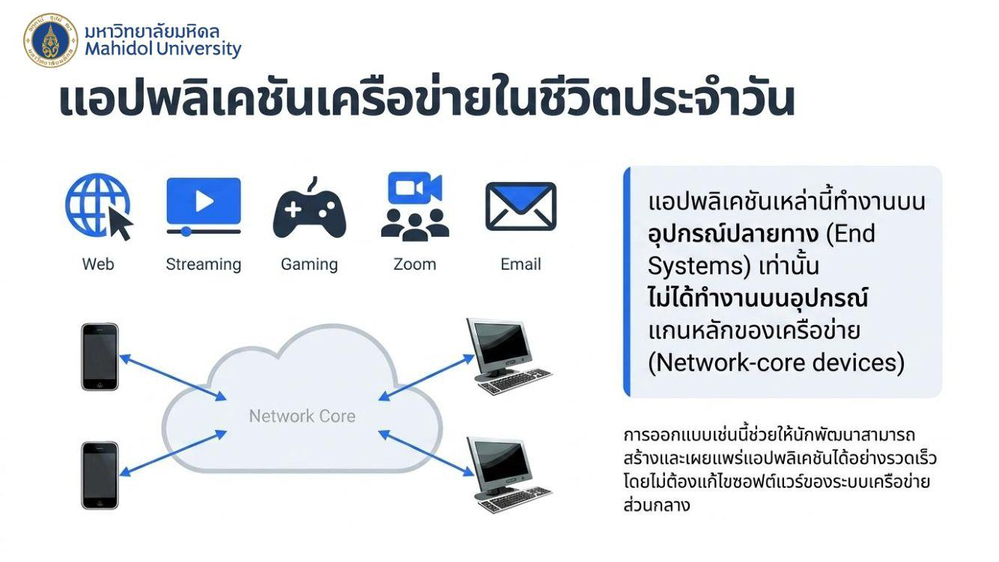
💡 เหมือนเปิดร้านค้าออนไลน์ใหม่ได้ทันทีโดยไม่ต้องขออนุญาตกรมทางหลวงสร้างถนนใหม่ — ถนน (core) มีอยู่แล้ว เราแค่สร้างร้าน (แอป) ที่ปลายทาง
2.2 สถาปัตยกรรม: Client-Server vs Peer-to-Peer
Client-Server — แบ่งหน้าที่ชัดเจน client ส่ง request, server (ศูนย์ข้อมูลเปิด 24 ชม.) ประมวลผลและส่ง response
| Server | Client |
|---|---|
| เปิดตลอดเวลา (always-on) | ติดต่อและสื่อสารกับ server |
| IP address ถาวร | อาจเชื่อมต่อเป็นช่วง ๆ (intermittently) |
| มักอยู่ใน data center เพื่อ scaling | อาจมี IP แบบ dynamic |
| ไม่สื่อสารกันเองโดยตรง |
ตัวอย่างโปรโตคอล: HTTP, IMAP, FTP
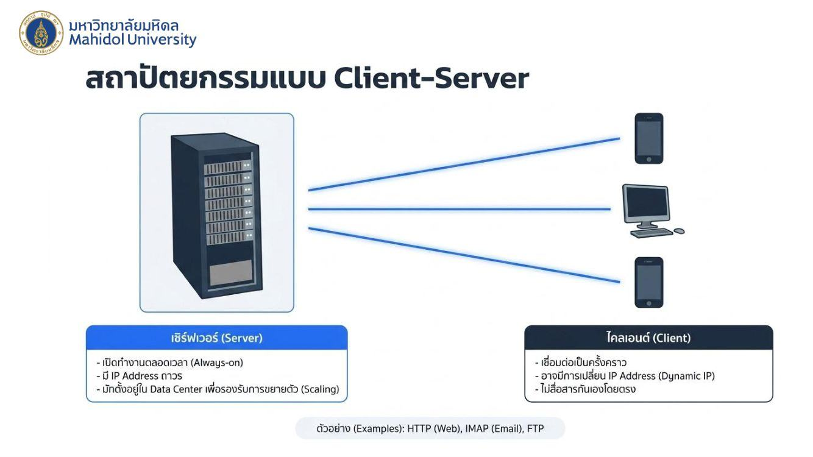
Peer-to-Peer (P2P)
- ไม่มี server ที่เปิดตลอดเวลา
- end systems ใด ๆ สื่อสารกันตรง ๆ
- peer ขอบริการจาก peer อื่น และ ให้บริการกลับ แก่ peer อื่น
- self scalability — peer ใหม่นำ "ความสามารถในการให้บริการ" ใหม่มาด้วย พร้อมกับ "ความต้องการ" ใหม่ (ยิ่งคนใช้เยอะ ระบบยิ่งเร็ว)
- peer เชื่อมต่อเป็นช่วง ๆ และ เปลี่ยน IP address → จัดการซับซ้อน
- ตัวอย่าง: P2P file sharing (BitTorrent)
- Blockchain = งานบนระบบ P2P ผสมคณิตศาสตร์ — เปลี่ยนจากคอมเครื่องเดียวที่ถูกแฮกได้ เป็นคอมนับล้านเครื่องทั่วโลกช่วยกันถือข้อมูลชุดเดียวกัน
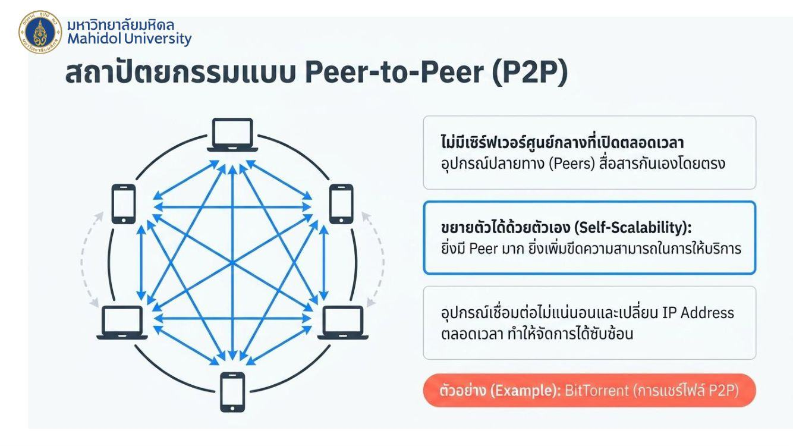
เปรียบเทียบ:
| Client-Server | P2P | |
|---|---|---|
| การพึ่งพาเซิร์ฟเวอร์ | สูงมาก (ต้องเปิดตลอดเวลา) | ไม่มี |
| การขยายตัว (scalability) | ต้องเพิ่มเซิร์ฟเวอร์ใน data center | ขยายตัวเองอัตโนมัติ (self-scaling) |
| การสื่อสารระหว่าง client | ผ่านเซิร์ฟเวอร์เท่านั้น | สื่อสารกันโดยตรง |
| ความซับซ้อนในการจัดการ | ง่าย (centralized) | ซับซ้อนมาก (dynamic IPs) |
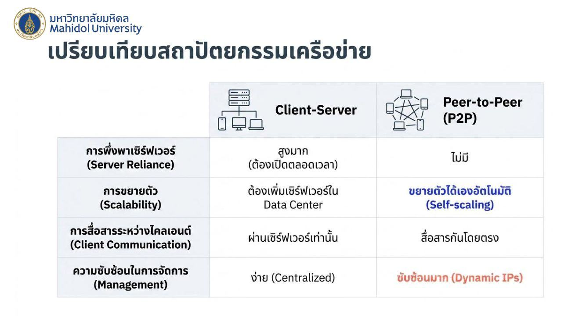
ตัวอย่างการใช้งานจริง:
- Client-Server (ใช้มากที่สุด เพราะคุมความปลอดภัยง่าย และผู้ให้บริการเก็บข้อมูลพฤติกรรมผู้ใช้ได้ดี): Social media (LINE, Facebook, Instagram), streaming (YouTube, Netflix, Hulu), Mobile Banking, เกมออนไลน์ (RoV, Free Fire)
- P2P (ใช้เมื่อส่งข้อมูลปริมาณมหาศาล หรืออยากได้ระบบกระจายศูนย์ที่ไม่มีใครผูกขาด):
- BitTorrent — แทนที่จะโหลดไฟล์เกม 50 GB จากเว็บตรง ๆ (เว็บช้า) คอมผู้ใช้ทั่วโลกที่เปิดโปรแกรมอยู่จะต่อ socket คุยกันเอง ส่งชิ้นส่วนไฟล์ให้กันจนครบ
- Bitcoin, Ethereum (blockchain) — ไม่พึ่งเซิร์ฟเวอร์ธนาคารกลาง ใช้คอมผู้ใช้ทุกคนช่วยตรวจสอบและบันทึกบัญชีร่วมกันอย่างโปร่งใส
- AirDrop / Quick Share (ส่งไฟล์ระยะใกล้)
- WebRTC ใน Zoom, Discord (โทร/วิดีโอคอลยุคใหม่)
2.3 Processes communicating (โปรเซสสื่อสารกัน)
- process = โปรแกรมที่กำลังรันอยู่ในโฮสต์
- ในเครื่องเดียวกัน → คุยกันด้วย inter-process communication (IPC) ที่ OS กำหนด
- ต่างเครื่อง → คุยกันด้วยการ แลกเปลี่ยนข้อความ (messages)
- client process = โปรเซสที่ เริ่ม การสื่อสาร
- server process = โปรเซสที่ รอ ให้ติดต่อมา
- ⚠️ แอปแบบ P2P ก็มีทั้ง client process และ server process (เครื่องเดียวเป็นทั้งสองบทบาท)
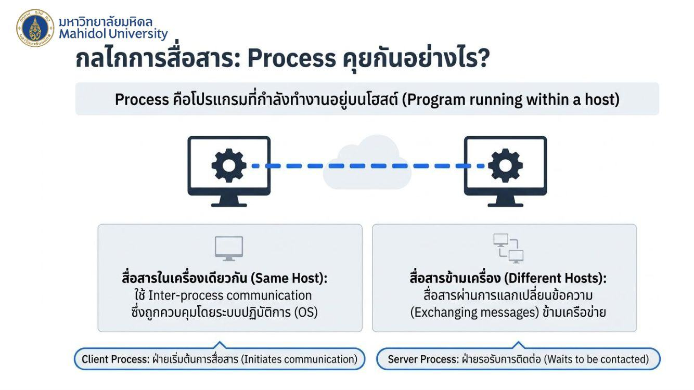
IPC ในเครื่อง vs ข้ามเครือข่าย (สไลด์ไทย):
- IPC อยู่ตรงรอยต่อระหว่างโปรแกรม เป็นสะพานให้ Process A (เช่น Chrome) กับ Process B (เช่น Word) ในเครื่องเดียวกันคุยกันได้โดยตรง เช่นผ่าน Shared Memory (RAM)
- ถ้า Process A อยากคุยกับเซิร์ฟเวอร์ต่างประเทศ จะใช้ Message Passing ส่งต่อลงไปที่ Socket (TCP/UDP) → หั่นข้อมูลเป็น packet → วิ่งลงสายเคเบิลใต้ทะเล (ไทย → อเมริกา) ที่แบ่งเลนความถี่แบบ FDM/OFDM
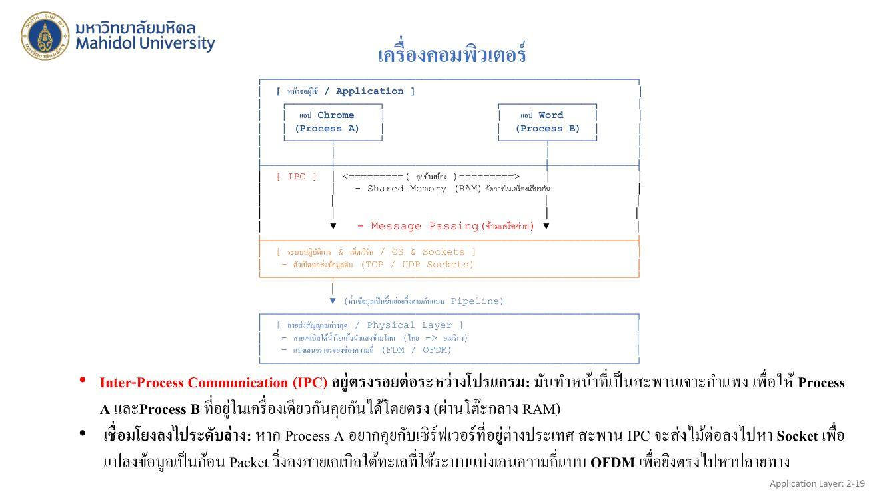
2.4 Sockets
- process ส่ง/รับข้อความผ่าน socket ของตัวเอง
- socket เปรียบเหมือนประตู
- process ผู้ส่ง "ผลักข้อความออกประตู"
- แล้วพึ่ง โครงสร้างพื้นฐาน transport ฝั่งนอกประตู ให้ส่งไปถึง socket ของ process ผู้รับ
- มี 2 sockets เกี่ยวข้อง: ฝั่งละ 1 อัน
- การแบ่งการควบคุม: นักพัฒนาแอปคุม "ในบ้าน" (application) — OS คุม "นอกบ้าน" (transport, network, link, physical)
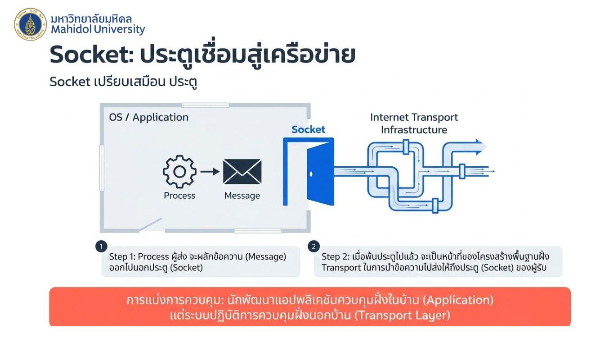
2.5 Addressing processes (การระบุตัว process)
- process ที่จะรับข้อความต้องมี identifier
- โฮสต์มี IP address 32 บิต ที่ไม่ซ้ำ
- ถาม: IP address ของโฮสต์พอที่จะระบุ process ไหม?
- ตอบ: ไม่พอ เพราะเครื่องเดียวรันได้หลาย process
ทำไม IP ไม่พอ:
- IP address อยู่ Network layer (L3) ระบุแค่ เครื่อง/host ไม่ได้ระบุแอปหรือ process ภายในเครื่อง
- เครื่องที่มี 1 IP รันหลาย process พร้อมกันได้ (เช่น Web server, SSH daemon, Database)
สิ่งที่ใช้ระบุ process:
- ผ่านเครือข่าย: ใช้ IP address + port number (รวมถึงโปรโตคอล transport เช่น TCP หรือ UDP) — port (L4) ส่งข้อมูลไปยัง socket ที่ผูกกับ process นั้น
- ภายในเครื่อง: OS กำหนด Process ID (PID) ให้ทุก process
💡 เปรียบเหมือนป้ายจ่าหน้าพัสดุ: IP address = บ้านเลขที่ (ระบุอุปกรณ์) / Port number = หมายเลขห้อง (ระบุ process)
ตัวอย่าง: ส่งข้อมูลไปที่
128.119.245.12:80= บ้านเลขที่ 128.119.245.12 ห้องหมายเลข 80 (Web server) — ส่วน Mail server ใช้ port 25
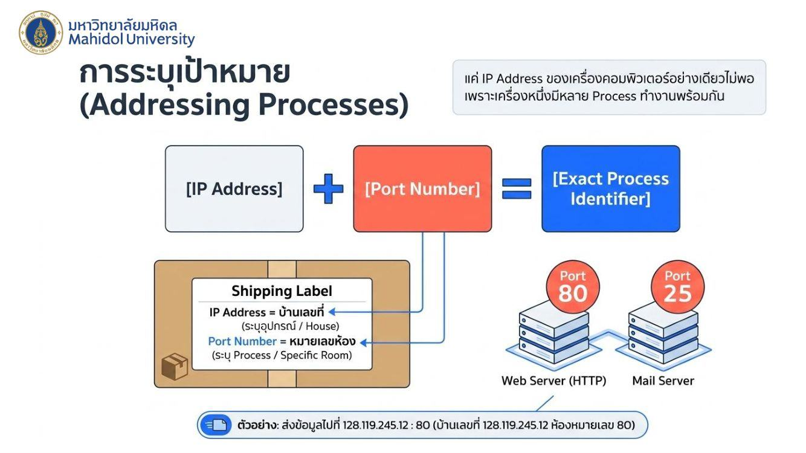
2.6 แอปพลิเคชันกับ transport protocol ที่ใช้
| Application | Application-layer protocol | Transport protocol |
|---|---|---|
| file transfer/download | FTP [RFC 959] | TCP |
| SMTP [RFC 5321] | TCP | |
| Web documents | HTTP [RFC 7230, 9110] | TCP |
| Internet telephony | SIP [RFC 3261], RTP [RFC 3550], หรือ proprietary | TCP or UDP |
| streaming audio/video | HTTP [RFC 7230], DASH | TCP |
| interactive games | WOW, FPS (proprietary) | UDP or TCP |
Protocol Mapping (สไลด์ไทย):
- Web documents → HTTP → TCP (ต้องการความถูกต้อง 100%)
- E-mail → SMTP (Simple Mail Transfer Protocol) → TCP
- File transfer → FTP → TCP
- Streaming video → HTTP/DASH (Dynamic Adaptive Streaming over HTTP, MPEG-DASH) → TCP หรือ UDP (เน้นความต่อเนื่อง)
- Internet telephony (voice) → SIP/RTP → UDP (ส่วนใหญ่) หรือ TCP (เน้นความหน่วงต่ำสุด)
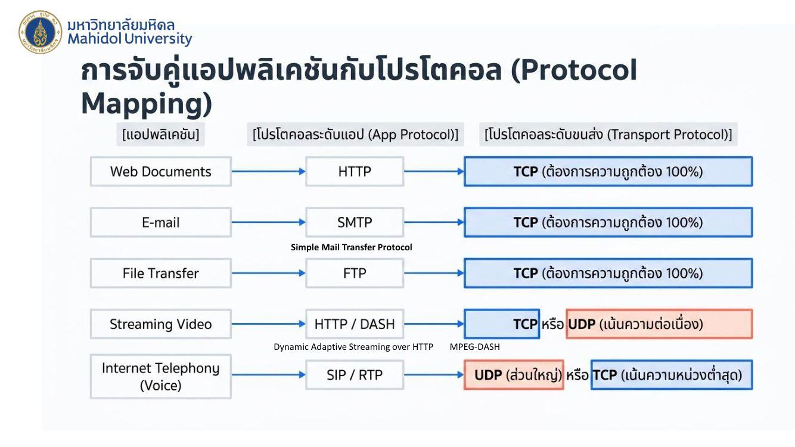
2.7 บริการของ TCP vs UDP ⭐
| TCP | UDP | |
|---|---|---|
| ความน่าเชื่อถือ | reliable transport ระหว่าง process ผู้ส่ง-ผู้รับ | unreliable data transfer |
| Flow control | ✅ ผู้ส่งจะไม่ส่งท่วมผู้รับ (กลไกคุมความเร็ว) | ❌ |
| Congestion control | ✅ ชะลอผู้ส่งเมื่อเครือข่ายแน่น | ❌ |
| Connection | connection-oriented ต้อง setup ก่อน | ❌ ไม่มี connection setup |
| Timing, throughput guarantee, security | ❌ ไม่มี | ❌ ไม่มี |
ถาม: แล้วจะมี UDP ไว้ทำไม? — เพราะไม่มี overhead ของ setup/การรับประกัน จึง เร็วและเบา เหมาะกับแอปที่ยอมข้อมูลหายได้บ้างแต่ต้องการความหน่วงต่ำ (เสียง วิดีโอสด เกม DNS)
2.8 Securing TCP: TLS
Vanilla TCP & UDP sockets (แบบธรรมดา):
- ไม่มี encryption
- รหัสผ่านที่ส่งเป็น cleartext วิ่งผ่านอินเทอร์เน็ตแบบ cleartext (!)
- ดักจับแพ็กเก็ตแล้วอ่านได้เลย ไม่ต้องถอดรหัส
Transport Layer Security (TLS):
- ให้ TCP connection ที่เข้ารหัส
- data integrity (ข้อมูลไม่ถูกแก้)
- end-point authentication (ยืนยันตัวตนปลายทาง)
TLS implement ใน application layer:
- แอปใช้ TLS libraries ซึ่งเรียกใช้ TCP อีกที
- cleartext ที่ส่งเข้า "socket" จะวิ่งผ่านอินเทอร์เน็ตแบบ encrypted
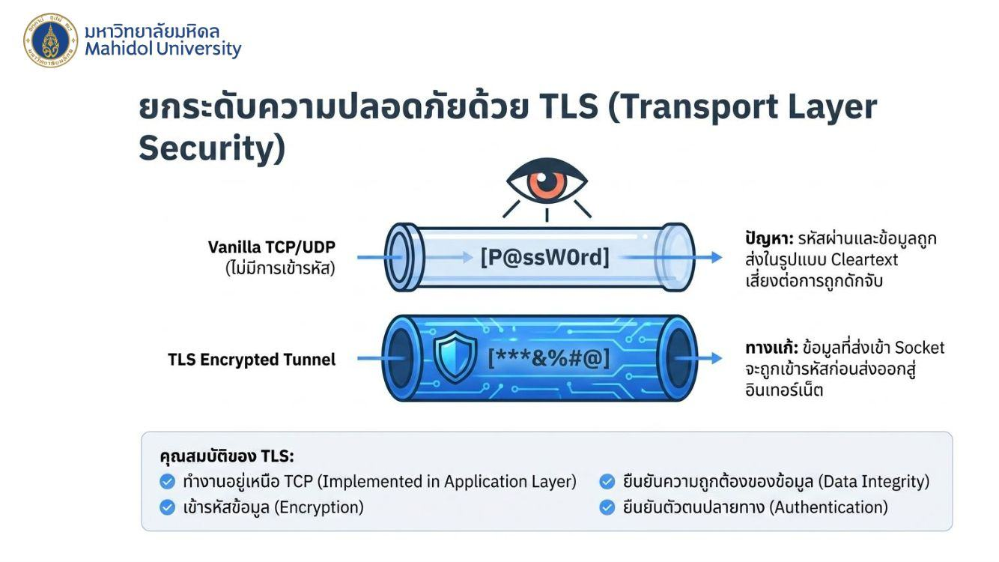
2.9 Key Takeaways ของหลักการ application layer
- Architecture: แอปทำงานบน end systems เลือกแบบ Client-Server (พึ่งศูนย์กลาง) หรือ P2P (กระจายศูนย์)
- Sockets & Addressing: process คุยกันผ่าน socket และหาเป้าหมายด้วย IP address + port number
- Transport protocols: เลือก TCP (ข้อมูลครบถ้วนแน่นอน) หรือ UDP (เร็วแต่ไม่รับประกัน) ตามการใช้งาน และเสริมความปลอดภัยด้วย TLS
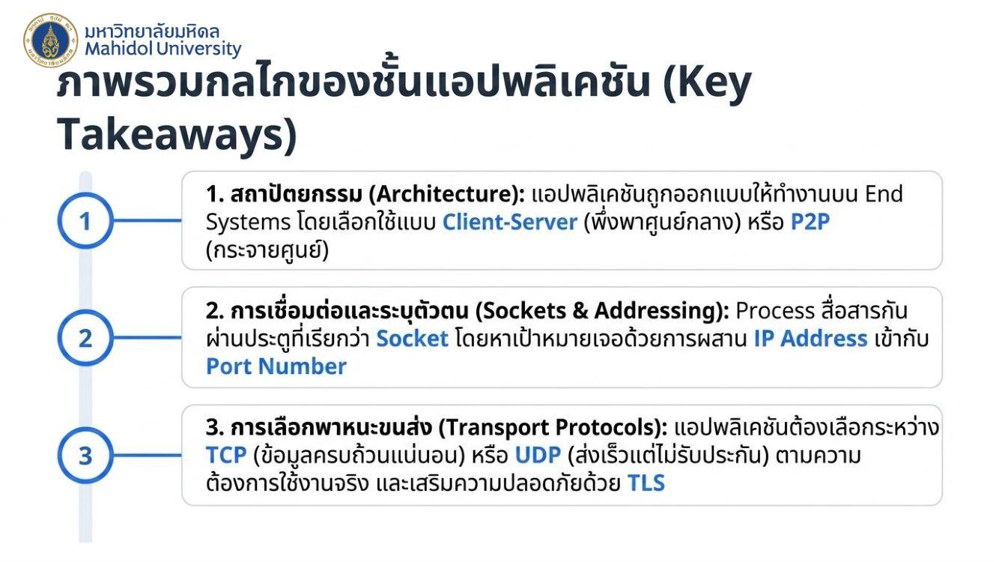
3. Web และ HTTP
3.1 ทบทวนพื้นฐาน Web
- web page ประกอบด้วย objects หลายชิ้น แต่ละชิ้นเก็บบน web server คนละเครื่องได้
- object = HTML file, JPEG image, Java applet, audio file, ...
- web page มี base HTML file ที่อ้างถึง objects อื่น ๆ แต่ละชิ้นมี URL
- เช่น
www.someschool.edu/someDept/pic.gif→www.someschool.edu= host name,/someDept/pic.gif= path name
- เช่น
ขยายความ (สไลด์ไทย):
- Object คืออะไร — หน้าเว็บ 1 หน้าไม่ใช่ไฟล์เดียว แต่รวมจากหลาย object:
- Base HTML file — โครงสร้างหลัก บอกว่าต้องดึง object ไหนมาแสดง
- รูปภาพ (.jpg, .png)
- ไฟล์สไตล์/การทำงาน (.css, .js)
- สื่ออื่น ๆ (วิดีโอ เสียง ฟอนต์)
- ทำไมเก็บคนละ server ได้ — เพราะอ้างแต่ละชิ้นด้วย URL หน้าเดียวจึงดึงจากหลายเครื่องพร้อมกันได้ เช่น
- Base HTML จาก
https://server-a.com/index.html - รูปจาก CDN เช่น
images.cloudfront.net/logo.png - สคริปต์/ฟอนต์จาก Google เช่น
https://fonts.googleapis.com/
- Base HTML จาก
- เบราว์เซอร์จะส่ง HTTP request ไปยัง web server ต่าง ๆ เพื่อดึง object แต่ละชิ้นมารวมเป็นหน้าเว็บสมบูรณ์
3.2 HTTP overview
HTTP = HyperText Transfer Protocol — โปรโตคอลชั้น application ของ Web ใช้โมเดล client/server
- client: browser ที่ request, receive และ "display" web objects (เช่น Safari บน iPhone, Firefox บน PC)
- server: web server ส่ง objects ตอบ request (เช่น Apache Web server)
HTTP ใช้ TCP:
- client เริ่ม TCP connection (สร้าง socket) ไปยัง server ที่ port 80
- server ยอมรับ TCP connection
- แลกเปลี่ยน HTTP messages ระหว่าง browser (HTTP client) กับ web server (HTTP server)
- ปิด TCP connection
HTTP เป็น "stateless" ⭐
- server ไม่เก็บข้อมูล เกี่ยวกับ request ในอดีตของ client
- (ข้อสังเกต) โปรโตคอลที่เก็บ "state" ซับซ้อน:
- ต้องเก็บประวัติ (state)
- ถ้า server/client crash มุมมองเรื่อง state ของสองฝั่งอาจไม่ตรงกัน ต้องมาปรับให้ตรงกัน
💡 ทำไมต้อง stateless? การไม่จำสถานะทำให้ระบบเร็ว ไม่ซับซ้อน และถ้าเซิร์ฟเวอร์ล่มก็ไม่เกิดปัญหาข้อมูลสถานะไม่ตรงกัน — เหมือน ปลาทองความจำสั้น: ทุกคำขอถือเป็นเรื่องใหม่หมด
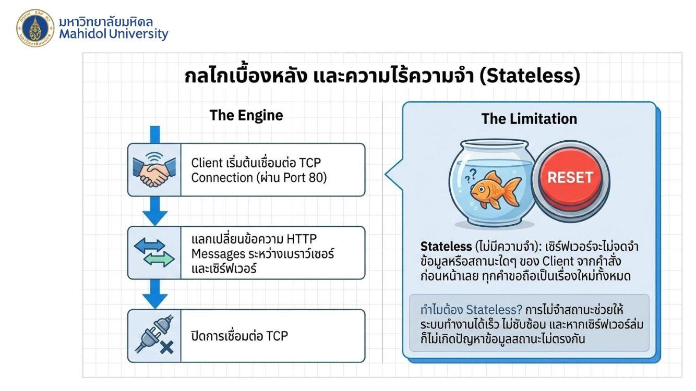
3.3 HTTP connections: 2 แบบ ⭐
| Non-persistent HTTP | Persistent HTTP |
|---|---|
| 1. เปิด TCP connection | เปิด TCP connection ไปยัง server |
| 2. ส่ง object ได้สูงสุด 1 ชิ้น | ส่ง หลาย objects บน TCP connection เดียว |
| 3. ปิด TCP connection | ปิด TCP connection |
| โหลดหลาย object = ต้องเปิดหลาย connection | ลดภาระทั้งฝั่ง client และ server |
| เปรียบ: รถส่งของวิ่งส่ง 1 กล่องแล้วกลับ | เปรียบ: สายพานส่งหลายกล่องต่อเนื่อง |
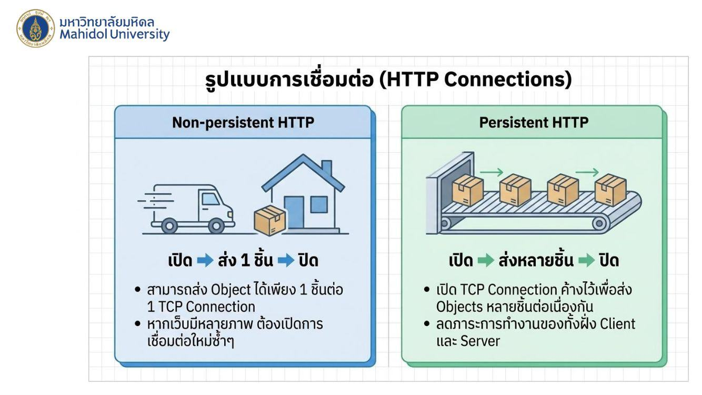
ตัวอย่าง Non-persistent HTTP
ผู้ใช้พิมพ์ URL www.someSchool.edu/someDepartment/home.index (มีข้อความ + อ้างถึงรูป jpeg 10 รูป)
- 1a. HTTP client เริ่ม TCP connection ไปยัง HTTP server ที่ www.someSchool.edu port 80 1b. HTTP server ที่รอ connection อยู่ที่ port 80 "accept" แล้วแจ้ง client
- client ส่ง HTTP request message (มี URL) เข้า socket ขอ object
someDepartment/home.index - server รับ request สร้าง response message ที่มี object ที่ขอ แล้วส่งเข้า socket
- server ปิด TCP connection
- client รับ response ที่มีไฟล์ html แสดงผล — parse html แล้ว เจอ jpeg อีก 10 รูป
- ทำขั้นตอน 1–5 ซ้ำอีก 10 ครั้ง สำหรับรูปแต่ละรูป
Response time ของ Non-persistent HTTP ⭐
RTT (Round Trip Time) = เวลาที่ packet เล็ก ๆ ใช้เดินทางจาก client ไป server และกลับมา
HTTP response time (ต่อ object):
- 1 RTT เริ่ม TCP connection
- 1 RTT ส่ง HTTP request และรอ response ไม่กี่ไบต์แรกกลับมา
- เวลาส่งไฟล์ (file transmission time)
$$\text{Non-persistent HTTP response time} = 2,RTT + \text{file transmission time}$$
→ ต้องเสียเวลาถึง 2 RTT ต่อการดึง object เพียง 1 ชิ้น!
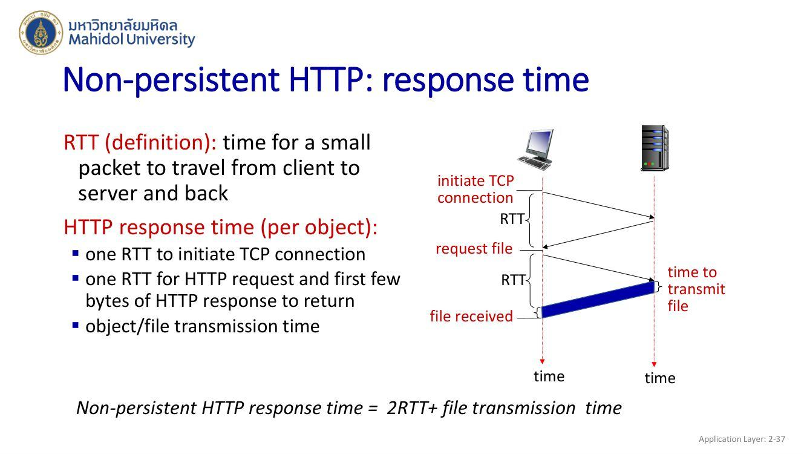
Persistent HTTP (HTTP 1.1)
ปัญหาของ non-persistent:
- ต้องใช้ 2 RTT ต่อ object
- OS overhead ในการสร้างแต่ละ TCP connection
- browser มักเปิด หลาย TCP connection ขนาน เพื่อดึง object พร้อมกัน
Persistent HTTP (HTTP 1.1):
- server เปิด connection ค้างไว้ หลังส่ง response
- HTTP message ถัดไประหว่าง client/server เดิม ส่งบน connection ที่เปิดอยู่
- client ส่ง request ทันที ที่เจอ object ที่อ้างถึง
- ใช้ เพียงประมาณ 1 RTT สำหรับทุก object ที่อ้างถึง (ลด response time ลงครึ่งหนึ่ง)
3.4 HTTP request message
มี 2 ประเภท: request และ response — เป็น ASCII (มนุษย์อ่านได้)
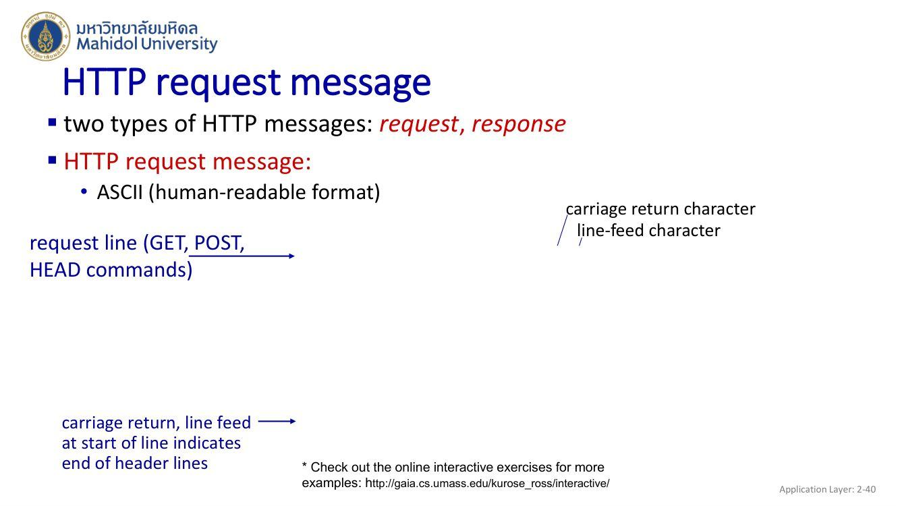
| ส่วน | ตัวอย่าง | ความหมาย |
|---|---|---|
| Request line | GET /index.html HTTP/1.1\r\n |
method (GET, POST, HEAD), URL, version |
| Header lines | Host: www-net.cs.umass.edu |
host ปลายทาง |
User-Agent: Mozilla/5.0 ... Firefox/80.0 |
ข้อมูลเบราว์เซอร์ | |
Accept: text/html,application/xhtml+xml |
ชนิดข้อมูลที่รับได้ | |
Accept-Language: en-us,en;q=0.5 |
ภาษาที่รองรับ | |
Accept-Encoding: gzip,deflate |
การบีบอัดที่รองรับ | |
Connection: keep-alive |
ขอ persistent connection | |
| บรรทัดว่าง | \r\n |
carriage return + line feed ต้นบรรทัด = จบ header |
\r= carriage return character,\n= line-feed character
รูปแบบทั่วไป (general format):
- request line:
methodspURLspversioncr lf - header lines:
header field name:valuecr lf (ซ้ำได้หลายบรรทัด) - cr lf (บรรทัดว่าง)
- entity body (ถ้ามี)
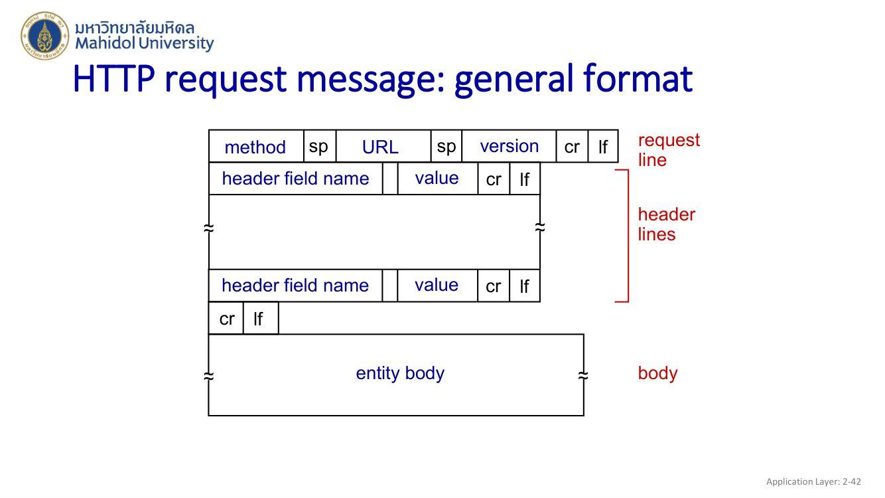
3.5 HTTP request methods
| Method | ทำอะไร |
|---|---|
| GET | ขอข้อมูลจากเซิร์ฟเวอร์; ส่งข้อมูลผู้ใช้ได้โดยแนบใน URL หลังเครื่องหมาย ? เช่น www.somesite.com/animalsearch?monkeys&banana |
| POST | ส่งข้อมูลให้เซิร์ฟเวอร์ประมวลผล — หน้าเว็บที่มี form input ข้อมูลผู้ใช้อยู่ใน entity body ของ request |
| HEAD | ขอ เฉพาะ headers ที่จะได้ถ้าส่ง GET กับ URL นั้น (ใช้เช็คสถานะ/ลิงก์โดยไม่โหลดไฟล์จริง) |
| PUT | อัปโหลดไฟล์ (object) ใหม่ ขึ้นเซิร์ฟเวอร์ — แทนที่ไฟล์เดิมที่ URL นั้นทั้งหมดด้วยเนื้อหาใน entity body |
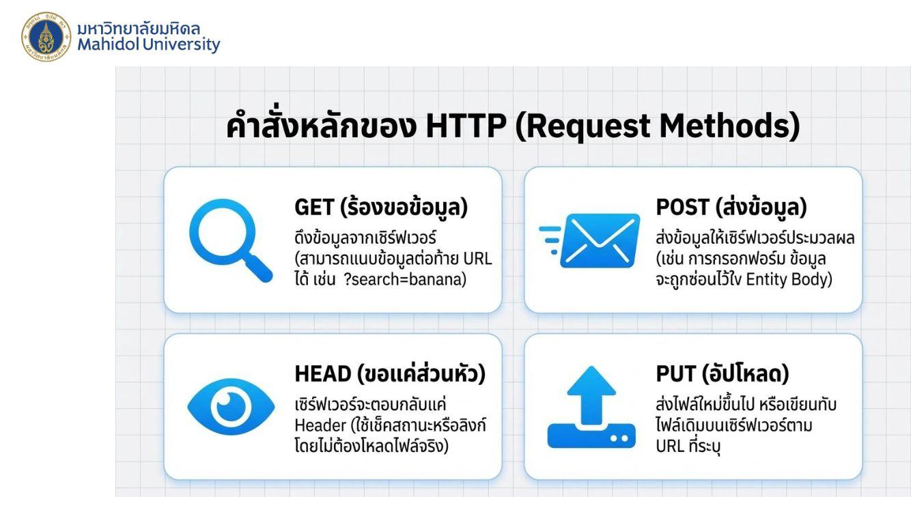
3.6 HTTP response message
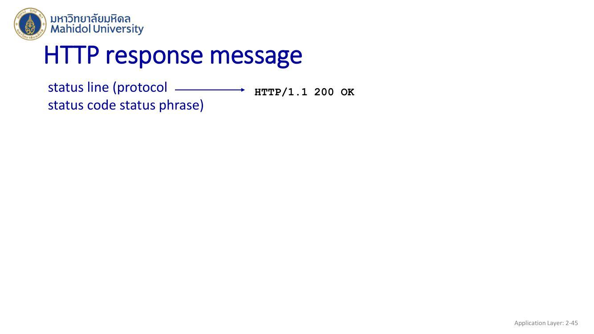
| ส่วน | ตัวอย่าง |
|---|---|
| Status line (protocol, status code, status phrase) | HTTP/1.1 200 OK |
| Header lines | Date: Tue, 08 Sep 2020 00:53:20 GMT |
Server: Apache/2.4.6 (CentOS) OpenSSL/1.0.2k-fips PHP/7.4.9 ... |
|
Last-Modified: Tue, 01 Mar 2016 18:57:50 GMT |
|
ETag: "a5b-52d015789ee9e" |
|
Accept-Ranges: bytes |
|
Content-Length: 2651 (ขนาดไฟล์) |
|
Content-Type: text/html; charset=UTF-8 (ประเภทไฟล์) |
|
| บรรทัดว่าง | \r\n |
| Entity body (data) | เนื้อหาไฟล์ เช่น HTML ที่ขอ |
แบบฝึกเพิ่ม: http://gaia.cs.umass.edu/kurose_ross/interactive/
3.7 Status codes ที่พบบ่อย ⭐
| Code | ความหมาย |
|---|---|
| 200 OK | สำเร็จ! พบไฟล์และส่งข้อมูลกลับมาเรียบร้อย |
| 301 Moved Permanently | ย้ายถาวร (server ระบุ URL ใหม่ใน header Location:) |
| 304 Not Modified | ไฟล์ไม่เปลี่ยน ใช้ของใน cache ได้ (ดู Conditional GET) |
| 400 Bad Request | server ไม่เข้าใจคำขอของ client |
| 404 Not Found | ไม่พบไฟล์นี้บนเว็บเซิร์ฟเวอร์ |
| 505 HTTP Version Not Supported | server ไม่รองรับ HTTP เวอร์ชันที่ client ขอ |
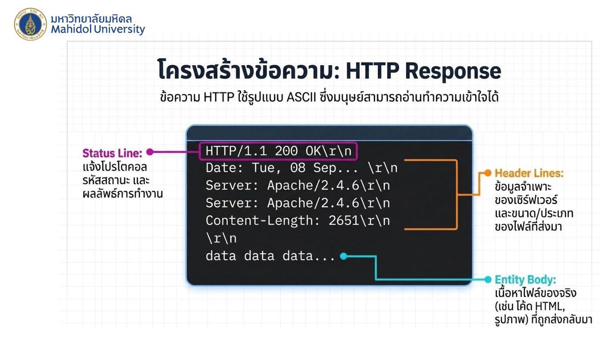
ภาพรวมการทำงานของ Application Layer (สไลด์สรุป Lecture 3):
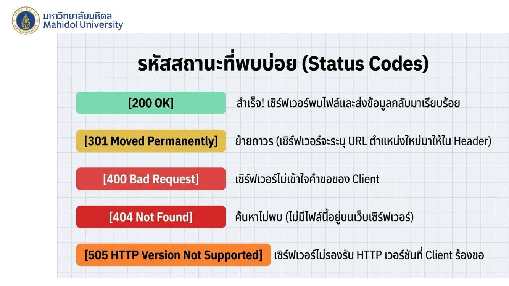
4. Cookies — รักษาสถานะ (state) ระหว่าง user กับ server
ทำไมต้องมี? HTTP เป็น stateless (ไม่มีความจำ) — cookies แก้จุดอ่อนนี้ ให้ระบบจำได้ว่าผู้ใช้คือใครและกำลังทำอะไร
4.1 องค์ประกอบ 4 ส่วน ⭐
- Header
Set-Cookie:ใน HTTP response — server มอบรหัสประจำตัว (cookie ID) ให้เบราว์เซอร์ - ไฟล์ cookie ฝั่ง client — เบราว์เซอร์เก็บ cookie ID ไว้บนเครื่องผู้ใช้
- Header
Cookie:ใน HTTP request — ครั้งต่อไปเบราว์เซอร์แนบ cookie ID กลับไปหา server อัตโนมัติ - Back-end database ฝั่ง server — server ใช้ cookie ID ค้นว่าผู้ใช้คือใคร มีสถานะอะไรค้างไว้
4.2 ตัวอย่าง: ซื้อของ Amazon
- client มี cookie ของ ebay อยู่แล้ว (
ebay 8734) ส่ง request ธรรมดาไป Amazon ครั้งแรก - Amazon server สร้าง ID 1678 ให้ผู้ใช้ และสร้าง entry ใน backend database
- ตอบกลับพร้อม
set-cookie: 1678→ ไฟล์ cookie ตอนนี้มีebay 8734,amazon 1678 - request ถัดไปแนบ
cookie: 1678→ server ทำ cookie-specific action (เช่นแสดงตะกร้าของคนนี้) - หนึ่งสัปดาห์ต่อมา กลับมาเข้า Amazon ก็ยังแนบ
cookie: 1678→ server ยังจำได้
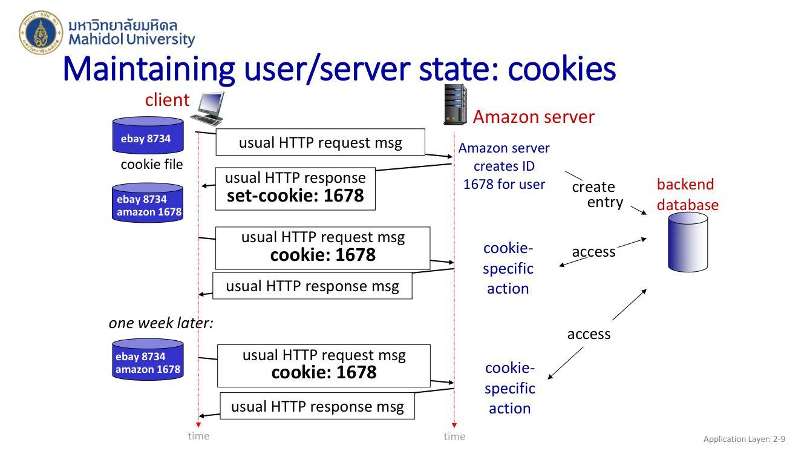
4.3 ประโยชน์หลัก
- Session management — จำสถานะล็อกอิน ไม่ต้องพิมพ์รหัสใหม่ทุกหน้า
- Shopping cart — จำสินค้าในตะกร้า
- User preferences — จำการตั้งค่า เช่นภาษา โหมดมืด/สว่าง
- Tracking / Recommendation — บันทึกพฤติกรรมเพื่อวิเคราะห์และแสดงโฆษณา/เนื้อหาที่เกี่ยวข้อง
4.4 ประเด็นความเป็นส่วนตัว
- First-party cookies — จากเว็บที่เรา ตั้งใจเข้า (ให้ base html) มีประโยชน์ (จำตะกร้า) แต่เว็บก็ใช้บันทึกประวัติค้นหา การคลิก เวลาที่อยู่แต่ละหน้า เพื่อสร้างโปรไฟล์ความสนใจ
- Third-party tracking cookies — จากเว็บที่เรา ไม่ได้เลือกเข้า (บริษัทโฆษณา/แพลตฟอร์มภายนอก) ถ้าหลายเว็บฝังโค้ดโฆษณาเจ้าเดียวกัน บริษัทนั้นใช้ cookie ID เดิม ตามรอยผู้ใช้ข้ามทุกเว็บ → โฆษณาเจาะจงเป้าหมาย (targeted ads)
4.5 ตัวอย่างการตามรอย: NY Times + AdX.com
- เข้า nytimes.com (sports): browser GET base html จาก nytimes.com → ได้
Set cookie: 1634(first-party; NY Times บันทึก1634: sports, 2/15/22)- หน้านั้นฝังโฆษณา → browser GET ไป AdX.com พร้อม
Referrer: NY Times Sports→ ได้Set cookie: 7493(third-party; AdX บันทึก7493: NY Times sports, 2/15/22) - แสดงหน้า NY Times ที่มีโฆษณาฝังอยู่
- หน้านั้นฝังโฆษณา → browser GET ไป AdX.com พร้อม
- วันถัดมาเข้า socks.com: มีโฆษณา AdX เหมือนกัน → GET ไป AdX พร้อม
Referrer: socks.com, cookie: 7493→ AdX บันทึก7493: socks.com, 2/16/22 - อีกวันกลับไป nytimes.com (arts): NY Times บันทึก
1634: arts, 2/17/22; GET ไป AdX พร้อมReferrer: nytimes.com, cookie: 7493→ AdX แสดงโฆษณาถุงเท้า! (Returned ad for socks!)
→ AdX ติดตามการท่องเว็บข้ามทุกไซต์ที่มีโฆษณา AdX และส่งโฆษณาตามประวัติได้
| วันแรก: nytimes sports | วันที่สอง: socks.com | วันที่สาม: nytimes arts |
|---|---|---|
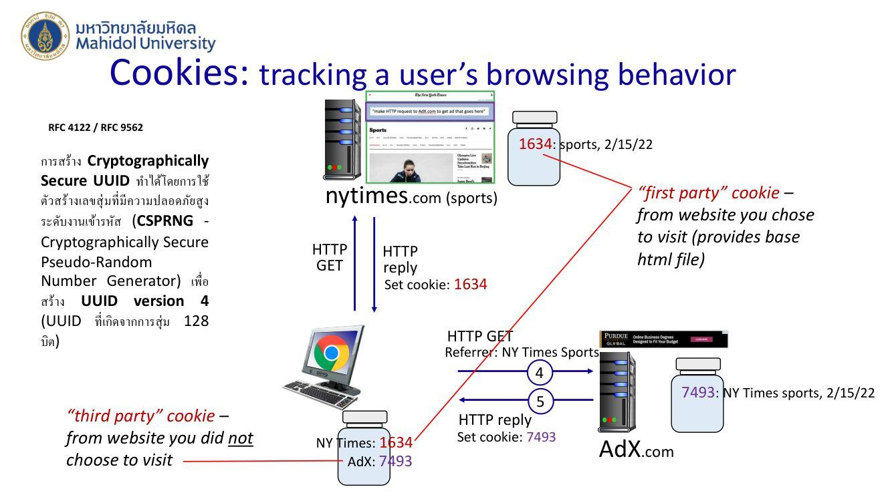 |
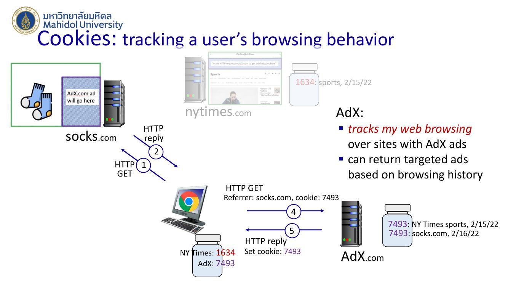 |
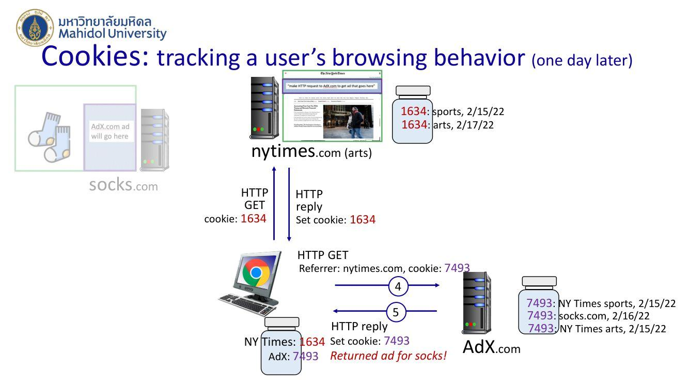 |
Cookie ID ที่ปลอดภัย: สร้างตาม RFC 4122 / RFC 9562 ด้วย CSPRNG (Cryptographically Secure Pseudo-Random Number Generator) เพื่อสร้าง UUID version 4 (สุ่ม 128 บิต) — เดาไม่ได้
4.6 สรุปการใช้ cookies ตามรอย
- ตามพฤติกรรมในเว็บเดียว (first party)
- ตามพฤติกรรม ข้ามหลายเว็บ (third party) โดยผู้ใช้ ไม่เคยเลือกเข้าเว็บ tracker เลย (!)
- การติดตามอาจ มองไม่เห็น — แทนที่จะเป็นโฆษณาที่มองเห็น อาจเป็น invisible link ที่สั่ง HTTP GET ไป tracker
นโยบายเบราว์เซอร์ต่อ third-party cookies:
| เบราว์เซอร์ (engine) | นโยบาย |
|---|---|
| Firefox (Gecko) | บล็อก 100% เป็นค่าเริ่มต้น ผ่าน Enhanced Tracking Protection (ETP) |
| Safari (WebKit) | บล็อก 100% เป็นค่าเริ่มต้น ผ่าน Intelligent Tracking Prevention (ITP) |
| Chrome (Blink) | ไม่บล็อกทั้งหมด เน้น ให้ผู้ใช้เลือกเอง (User Choice) ร่วมกับ Privacy Sandbox (เดิมตั้งเป้าปิดในปี 2023) |
| Edge (Blink) | บล็อกเป็นค่าเริ่มต้นเฉพาะโดเมนใน บัญชีดำ (Known Trackers) |
4.7 GDPR และ cookies
- GDPR (EU General Data Protection Regulation), recital 30 (May 2018): บุคคลอาจถูกเชื่อมโยงกับ online identifiers เช่น IP address, cookie identifiers ซึ่งทิ้งร่องรอย และเมื่อรวมกับข้อมูลอื่นอาจใช้ สร้างโปรไฟล์และระบุตัวบุคคลได้
- เมื่อ cookie ระบุตัวบุคคลได้ → cookie ถือเป็นข้อมูลส่วนบุคคล อยู่ภายใต้ GDPR
- ผู้ใช้ต้อง ควบคุมได้ชัดเจน ว่าจะยอมรับ cookies หรือไม่ (จึงมี cookie consent popup)
5. Web Caches (Proxy Servers)
5.1 หลักการ
เป้าหมาย: ตอบ request ของ client โดยไม่ต้องไปถึง origin server
- ผู้ใช้ตั้งค่า browser ให้ชี้ไปที่ web cache (local)
- browser ส่ง ทุก HTTP request ไปที่ cache
- ถ้า object อยู่ใน cache → cache ส่ง object ให้ client เลย
- ถ้า ไม่อยู่ → cache ขอ object จาก origin server, เก็บไว้ใน cache แล้วส่งให้ client
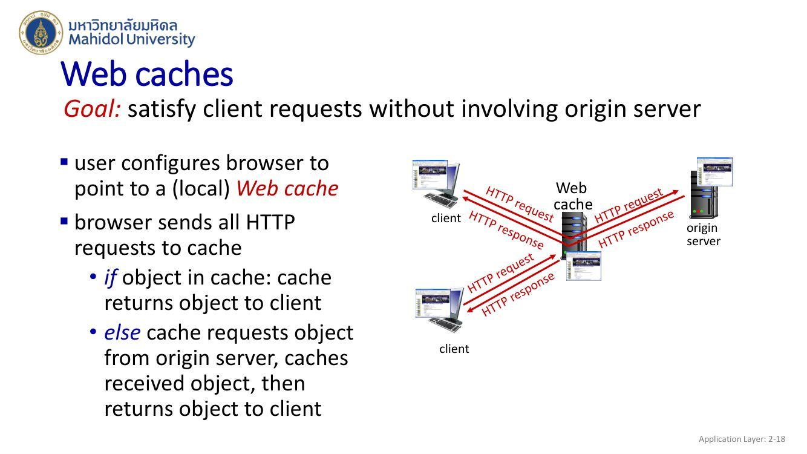
Web cache เป็นทั้ง client และ server:
- เป็น server ของ client ที่ขอมา
- เป็น client ของ origin server
Server บอก cache ว่าเก็บได้นานเท่าไหร่ ผ่าน response header:
Cache-Control: max-age=<seconds>เช่นmax-age=3600= แคชไว้ได้ 3,600 วินาที (1 ชั่วโมง)Cache-Control: no-cache= ต้องไปถาม server ก่อนทุกครั้ง
ทำไมต้อง web caching?
- ลด response time — cache อยู่ใกล้ client กว่า
- ลด traffic บน access link ขององค์กร
- อินเทอร์เน็ตเต็มไปด้วย cache → ช่วยให้ content provider รายเล็ก/งบน้อย ส่งเนื้อหาได้มีประสิทธิภาพ (มีเซิร์ฟเวอร์หลักเครื่องเดียวก็รองรับผู้ใช้จำนวนมากได้)
5.2 ตำแหน่งของ cache 4 แบบ
| ตำแหน่ง | อยู่ที่ไหน | หน้าที่ |
|---|---|---|
| 1. Client-side / Browser cache | ดิสก์หรือ RAM ของเครื่องผู้ใช้ | เก็บรูป CSS JS ของเว็บที่เคยเปิด เข้าซ้ำโหลดทันทีไม่ต้องยิง request ออกไป |
| 2. Institutional network / Forward proxy | ใน LAN ของบริษัท/มหาวิทยาลัย (ก่อนถึง access router) | ดักจับ request ในองค์กร ถ้ามีคนเคยโหลดแล้ว คนอื่นดึงจาก cache ได้เลย ไม่ต้องวิ่งออก access link |
| 3. ISP edge / CDN cache | edge node ของ ISP หรือ CDN (Cloudflare, Akamai) | กระจายคลังข้อมูลไว้ใกล้ผู้ใช้ทั่วโลก ลด RTT |
| 4. Server-side / Reverse proxy cache | หน้า origin server ใน data center/cloud | รับภาระส่งไฟล์คงที่ (static assets) แทน ไม่ให้ web server/database ทำงานหนัก |
5.3 Proxy server
- Intermediary (ตัวกลาง): รับ request จาก client ส่งต่อไป destination server แล้วนำ response กลับให้ผู้ใช้
- Forward proxy — อยู่ ฝั่ง client: ซ่อน IP ผู้ใช้, บล็อกเว็บไม่เหมาะสม, ทำ web caching ในองค์กร
- Reverse proxy — อยู่ ฝั่ง server: รับ traffic มาก, กระจายภาระ (load balancing), ป้องกันเซิร์ฟเวอร์หลักจากการโจมตี, cache ไฟล์คงที่
5.4 ตัวอย่างคำนวณ Caching ⭐
Scenario:
- access link rate: 1.54 Mbps
- RTT จาก router ขององค์กรไป server: 2 sec
- web object size: 100K bits
- request rate เฉลี่ยจาก browser ไป origin server: 15/sec
- avg data rate ไป browser: 1.50 Mbps (= 15 × 100K)
- LAN ในองค์กร: 1 Gbps
สภาพปัจจุบัน (ไม่มี cache):
- Access link utilization = avg data rate / access link rate = 1.50 / 1.54 ≈ 0.97 (97%)
- LAN utilization = 1.50 / 1000 = 0.0015 (0.15%)
- Transmission delay = 100K bits / 1.54 Mbps ≈ 0.065 วินาที
- End-end delay = Internet delay + access link delay + LAN delay = 2 sec + minutes + usecs
- ปัญหา: utilization สูงมาก → queueing delay มหาศาล (นึกถึง La/R → 1 จาก Ch1)
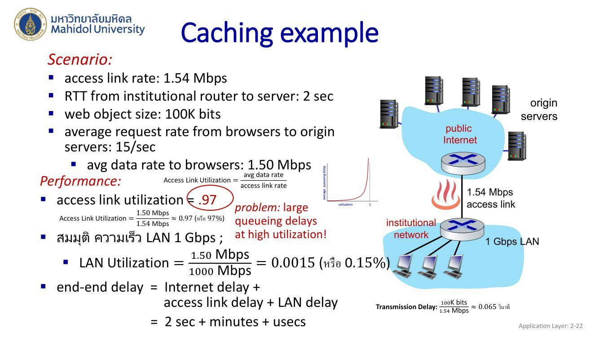
Option 1: ซื้อ access link ที่เร็วขึ้น (154 Mbps)
- access link utilization = 1.50/154 ≈ 0.0097
- access link delay ลดเหลือ msecs
- end-end delay ≈ 2 sec + msecs + usecs
- ต้นทุน: แพง!
Option 2: ติดตั้ง web cache ในองค์กร (ราคาถูก!) — สมมติ cache hit rate = 0.4
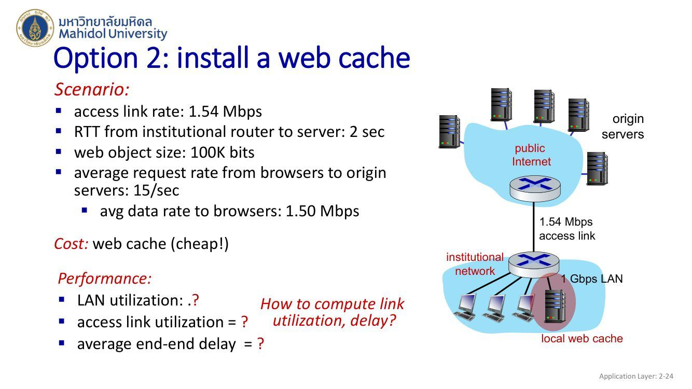
- traffic ที่ต้องวิ่งผ่าน access link เหลือ 60%: 1.50 × 0.60 = 0.90 Mbps
- Traffic intensity = 0.90 / 1.54 ≈ 0.58 → ไม่มีคิวหนาแน่น ตัด queueing delay ทิ้งได้
$$\text{Average Delay} = \text{Hit Rate} \times \text{Delay}{hit} + \text{Miss Rate} \times \text{Delay}{miss}$$
- Hit (40%): ดึงจาก cache ใน LAN → Delay_hit ≈ 0 วินาที (ระดับ ms ตัดทิ้งได้)
- Miss (60%): ต้องไป origin server → Delay_miss = RTT + transmission delay = 2 + 0.065 = 2.065 วินาที
- Average Delay = 0.4 × 0 + 0.6 × 2.065 = ≈ 1.24 วินาที (ถ้าคิดแค่ RTT: 0.6 × 2 = 1.2 วินาที)
สรุป: web cache ลด delay จากเดิมที่คิวยาวมากจนใช้งานไม่ได้ (≈∞) เหลือ ~1.24 วินาที — ต่ำกว่าการซื้อลิงก์ 154 Mbps และถูกกว่าด้วย!
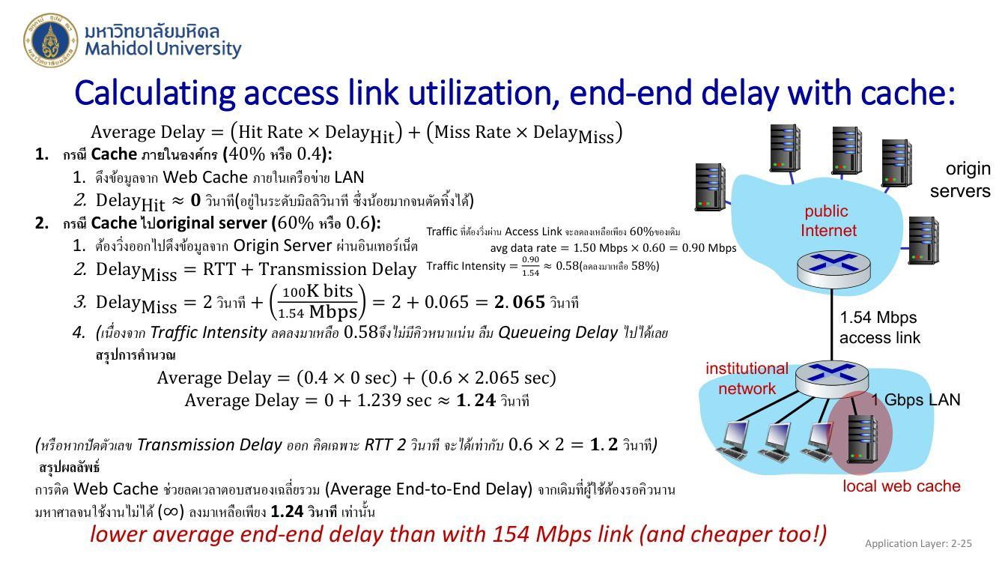
⚠️ ตัวเลขที่ต้องจำ: utilization เดิม 0.97, ลิงก์เร็ว 0.0097, มี cache → 0.58; delay มี cache ≈ 1.24 s
5.5 Browser caching: Conditional GET ⭐
เป้าหมาย: ไม่ส่ง object ถ้า browser มีเวอร์ชันใน cache ที่ยังใหม่อยู่ → ไม่มี object transmission delay และไม่เปลืองทรัพยากรเครือข่าย
- client: ระบุวันที่ของสำเนาใน cache ใน request:
If-modified-since: <date> - server:
- ถ้า object ไม่เปลี่ยน ตั้งแต่
<date>→HTTP/1.0 304 Not Modified(ไม่มีเนื้อหาไฟล์) - ถ้า object เปลี่ยนแล้ว →
HTTP/1.0 200 OK+<data>(ส่งไฟล์ใหม่)
- ถ้า object ไม่เปลี่ยน ตั้งแต่
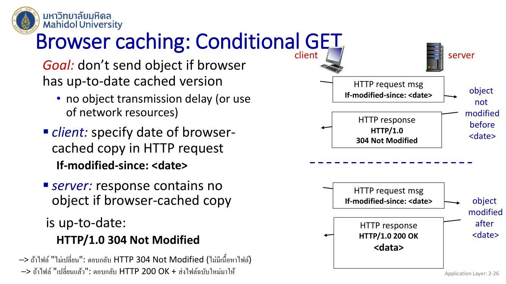
6. HTTP/2, HTTP/3 และ QUIC
6.1 ปัญหาของ HTTP/1.1
Key goal ของ HTTP/2: ลด delay ของ request หลาย object
HTTP/1.1 เพิ่ม pipelined GETs หลายตัวบน TCP connection เดียว (รัวส่ง GET ได้หลายอันโดยไม่ต้องรอ response ทีละอันเหมือน HTTP/1.0) แต่:
- server ตอบ ตามลำดับ (FCFS: first-come-first-served)
- ด้วย FCFS object เล็กอาจต้อง รอ object ใหญ่ข้างหน้าส่งเสร็จ = head-of-line (HOL) blocking
- loss recovery (ส่ง TCP segment ที่หายใหม่) ทำให้การส่ง object หยุดชะงัก (stall) — เพราะทุกอย่างวิ่งบน TCP เส้นเดียว ถ้าแพ็กเก็ตหาย TCP หยุดส่งทั้งหมดเพื่อรอ retransmission ไฟล์อื่นในคิวติดตามไปด้วย
ตัวอย่าง HOL blocking (HTTP 1.1): client ขอ O1 (ใหญ่ เช่นวิดีโอ) และ O2, O3, O4 (เล็ก) → ส่งตามลำดับ: O2, O3, O4 ต้องรอหลัง O1
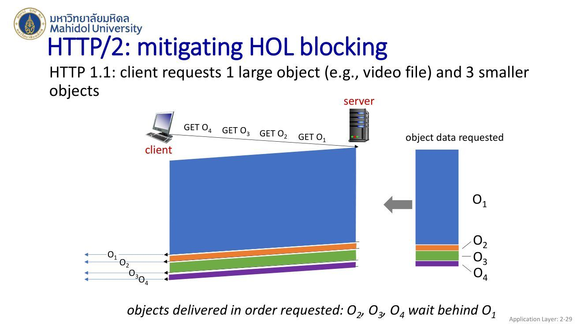
6.2 HTTP/2 [RFC 7540, 2015]
เพิ่มความยืดหยุ่นให้ server ในการส่ง objects — ใช้ multiplexing หั่นไฟล์เป็น frame เล็ก ๆ ส่งสลับกัน
- methods, status codes, header fields ส่วนใหญ่ไม่เปลี่ยน จาก HTTP 1.1 (ยังใช้ GET/POST, 200/404) → นักพัฒนาไม่ต้องเขียนเว็บใหม่
- ลำดับการส่ง object ตาม priority ที่ client กำหนด (ไม่จำเป็นต้อง FCFS)
- push object ที่ client ยังไม่ขอ ส่งให้ล่วงหน้าได้
- แบ่ง object เป็น frames แล้ว schedule frames สลับกันเพื่อ ลด HOL blocking
ตัวอย่าง (HTTP/2): objects แบ่งเป็น frames ส่งสลับกัน → O2, O3, O4 ส่งถึงเร็ว, O1 ช้าลงเล็กน้อย
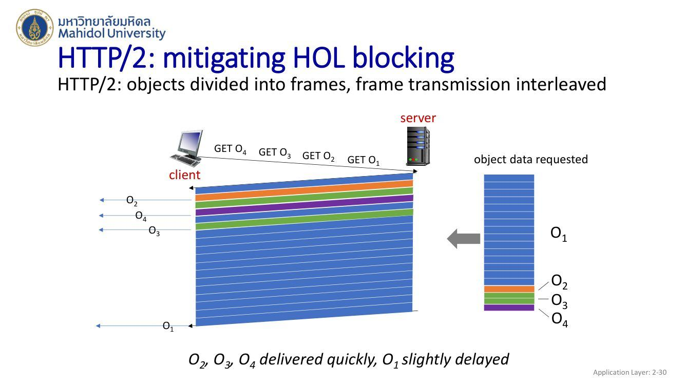
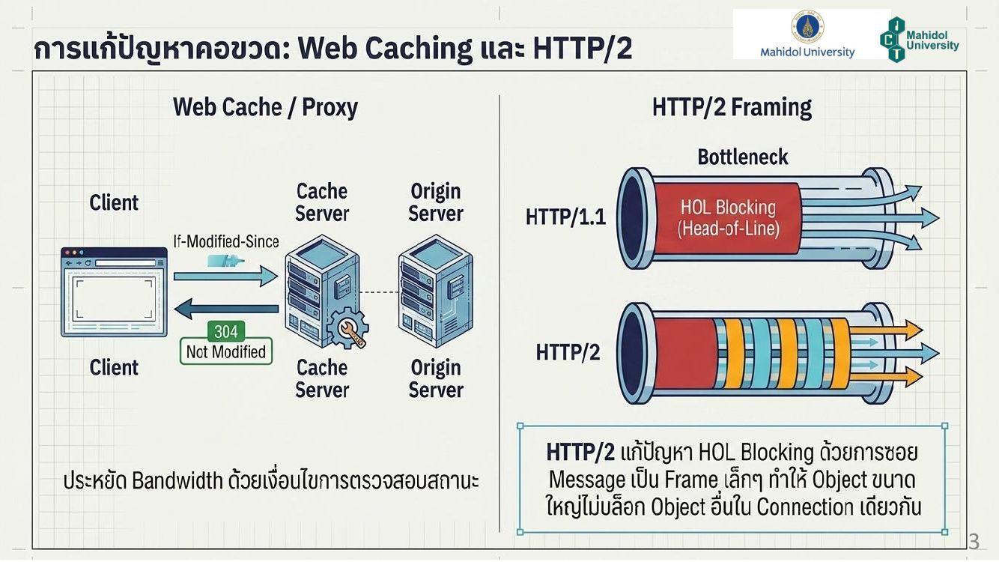
6.3 จาก HTTP/2 สู่ HTTP/3
HTTP/2 บน TCP connection เดียว หมายความว่า:
- แก้ HOL blocking ได้ แต่ยังติดปัญหา retransmission เมื่อแพ็กเก็ตหาย — ข้อมูลยังวิ่งบน TCP เส้นเดียว → เกิดแนวคิดส่งมากกว่า 1 ทาง
- ไม่มี security บน vanilla TCP
- HTTP/3: เพิ่ม security, error control และ congestion control แยกต่อ object (pipelining มากขึ้น) บน UDP
6.4 QUIC: Quick UDP Internet Connections
- โปรโตคอล application-layer บน UDP
- เพิ่มประสิทธิภาพของ HTTP
- ใช้ใน Google servers หลายตัว, แอป (Chrome, YouTube mobile)
- ปัจจุบันใช้กับ YouTube, Google Search, Maps, Gmail, Android, Facebook, Instagram, WhatsApp, Uber, Spotify, Netflix
| Stack | Application | Transport | Network |
|---|---|---|---|
| HTTP/2 over TCP | HTTP/2 + TLS | TCP | IP |
| HTTP/3 | HTTP/2 (slimmed) + QUIC | UDP | IP |
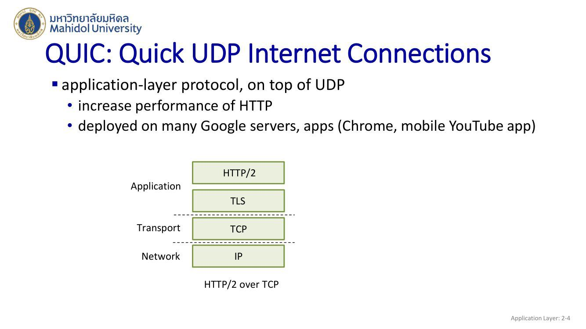
- ใช้แนวทางเดียวกับที่จะเรียนใน transport layer สำหรับ connection establishment, error control, congestion control
- error & congestion control: อัลกอริทึมคล้ายของ TCP ("Readers familiar with TCP's loss detection and congestion control will find algorithms here that parallel well-known TCP ones.")
- connection establishment: reliability, congestion control, authentication, encryption, state — สร้างเสร็จใน 1 RTT
6.5 QUIC: Connection establishment ⭐
| TCP + TLS | QUIC |
|---|---|
| TCP handshake (transport: reliability, congestion control state) แล้วตามด้วย TLS handshake (security: authentication, crypto state) | reliability, congestion control, authentication, crypto state ทำพร้อมกัน |
| 2 serial handshakes | 1 handshake (1-RTT) |
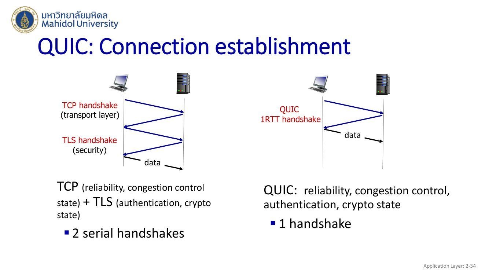
QUIC: 0-RTT connection establishment
- ตอนจบ QUIC connection แรก server ส่ง TLS session ticket มา → client เก็บ (cache) ไว้
- ตอนเริ่ม connection ที่สอง client ใช้ session ticket เดิมสำหรับ encryption/authentication → ส่ง data ได้ทันที = 0 RTT handshake delay
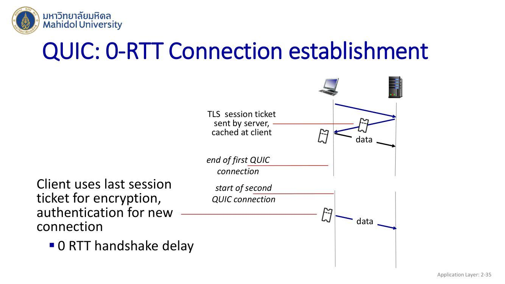
💡 เปรียบเทียบ: TCP+TLS = เข้าตึกต้องแลกบัตรที่ป้อมยาม แล้วไปสแกนนิ้วอีกด่าน / QUIC 1-RTT = ด่านเดียวทำทั้งสองอย่าง / QUIC 0-RTT = มีบัตรผ่านถาวรแล้ว เดินเข้าได้เลย
7. ตารางพอร์ตยอดนิยม ⭐
| Port | Protocol / Service | ลักษณะการใช้งาน |
|---|---|---|
| 20, 21 | FTP | ส่งโอนไฟล์ (20 = Data, 21 = Control) |
| 22 | SSH / SFTP | รีโมตควบคุมเครื่องแบบเข้ารหัส / โอนไฟล์ปลอดภัย |
| 23 | Telnet | รีโมตควบคุมเครื่องแบบข้อความธรรมดา (ไม่ปลอดภัย) |
| 25 | SMTP | ส่งอีเมลระหว่างเซิร์ฟเวอร์แบบเดิม (plain text) |
| 53 | DNS | ค้นหาแปลงชื่อโดเมนเป็น IP address (UDP/TCP) |
| 80 | HTTP | เว็บไซต์ทั่วไปแบบไม่เข้ารหัส |
| 110 | POP3 | ดึงอีเมลลงเครื่องแบบเดิม (plain text) |
| 143 | IMAP | ซิงก์เปิดอ่านอีเมลแบบเดิม (plain text) |
| 443 | HTTPS / QUIC | เว็บไซต์แบบปลอดภัย (SSL/TLS / HTTP/2 / HTTP/3) |
| 465, 587 | SMTPS / Submission | ส่งอีเมลแบบเข้ารหัสความปลอดภัย |
| 993 | IMAPS | ซิงก์อ่านอีเมลแบบเข้ารหัส |
| 995 | POP3S | ดึงอีเมลแบบเข้ารหัส |
| 3306 | MySQL | เชื่อมต่อฐานข้อมูล MySQL / MariaDB |
| 5432 | PostgreSQL | เชื่อมต่อฐานข้อมูล PostgreSQL |
| 6379 | Redis | In-memory database / cache |
| 8080, 8443 | HTTP-Alt | พอร์ตทดสอบเว็บเซิร์ฟเวอร์ หรือใช้ในการพัฒนาซอฟต์แวร์ |
💡 จำคู่ปลอดภัย: HTTP 80 → HTTPS 443, IMAP 143 → IMAPS 993, POP3 110 → POP3S 995, Telnet 23 → SSH 22
8. E-mail
8.1 องค์ประกอบหลัก 3 อย่าง
- User agents (a.k.a. "mail reader") — เขียน แก้ไข อ่านอีเมล เช่น Outlook, iPhone mail client; ข้อความขาออก/ขาเข้าเก็บบน server
- Mail servers
- mailbox เก็บข้อความขาเข้าของผู้ใช้
- message queue เก็บข้อความขาออกที่รอส่ง
- SMTP (Simple Mail Transfer Protocol) — ใช้ ระหว่าง mail servers ในการส่งอีเมล
- client = mail server ผู้ส่ง
- "server" = mail server ผู้รับ
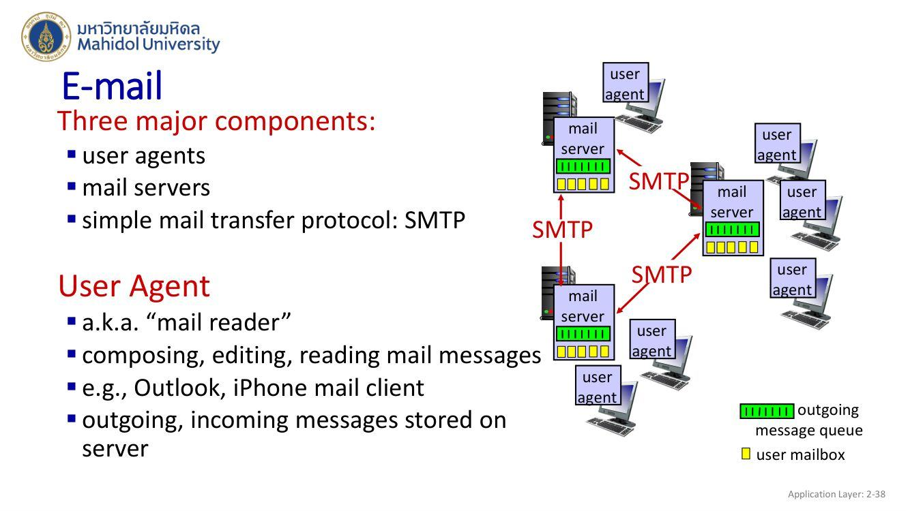
8.2 SMTP [RFC 5321]
- ใช้ TCP ส่งอีเมลอย่างเชื่อถือได้ จาก client (mail server ที่เริ่ม connection) ไป server ที่ port 25
- ส่งตรง (direct transfer): server ผู้ส่ง (ทำตัวเป็น client) → server ผู้รับ
- 3 phases:
- SMTP handshaking (greeting)
- SMTP transfer of messages
- SMTP closure
- command/response แบบเดียวกับ HTTP
- commands: ASCII text (เช่น HELO)
- response: status code + phrase
- ตัวอย่าง code: 220 = เซิร์ฟเวอร์พร้อมให้บริการ, 250 Hello = ตอบรับ HELO, 354 = Start mail input
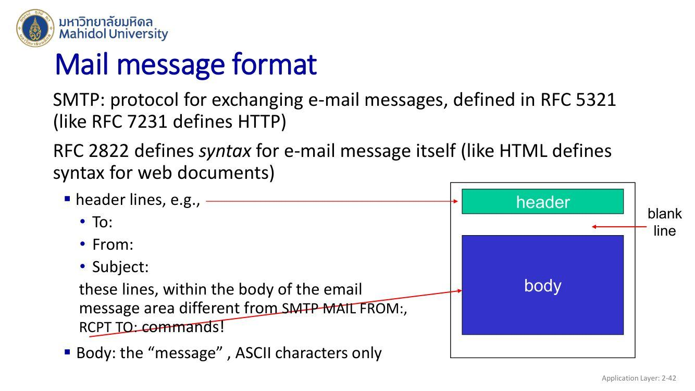
8.3 Scenario: Alice ส่ง e-mail ถึง Bob ⭐
- Alice ใช้ UA เขียนอีเมล "to" bob@someschool.edu
- UA ของ Alice ส่งข้อความไป mail server ของ Alice ด้วย SMTP → ข้อความเข้า message queue
- ฝั่ง client ของ SMTP ที่ mail server ของ Alice เปิด TCP connection กับ mail server ของ Bob
- SMTP client ส่งข้อความ ของ Alice ผ่าน TCP connection
- mail server ของ Bob วางข้อความลง mailbox ของ Bob
- Bob เปิด UA อ่านข้อความ
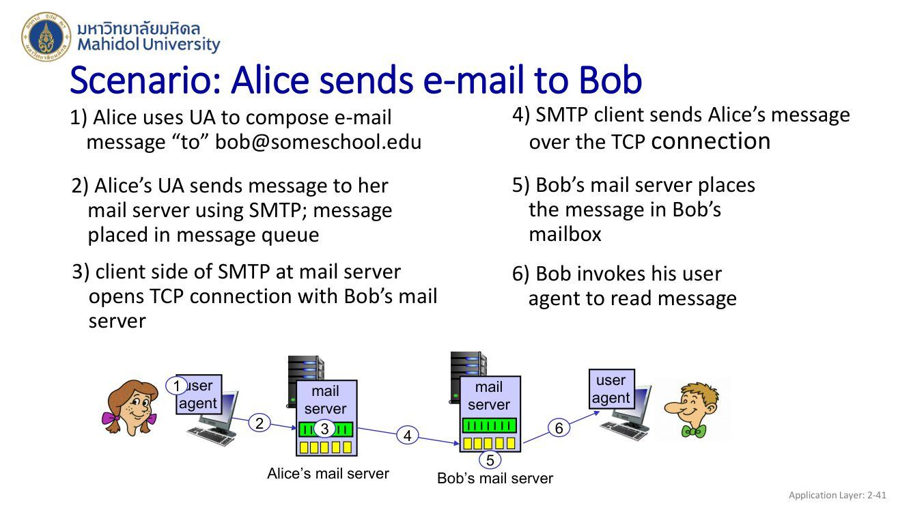
8.4 Mail message format
- SMTP = โปรโตคอลแลกอีเมล กำหนดใน RFC 5321 (เหมือน RFC 7231 กำหนด HTTP)
- RFC 2822 กำหนด syntax ของตัวอีเมล (เหมือน HTML กำหนด syntax ของเอกสารเว็บ)
- โครงสร้าง: header → blank line → body
- header lines เช่น
To:,From:,Subject: - ⚠️ header เหล่านี้ ต่างจาก คำสั่ง SMTP
MAIL FROM:,RCPT TO:! - body = "ข้อความ" ASCII characters only
- header lines เช่น
8.5 การดึงอีเมล: Mail access protocols
- SMTP: ส่ง/เก็บอีเมลไปยัง server ของผู้รับ (push)
- mail access protocol: ดึงอีเมลจาก server (pull)
- IMAP (Internet Mail Access Protocol) [RFC 3501]: อีเมล เก็บบน server IMAP ให้ดึง ลบ จัดโฟลเดอร์บน server
- HTTP: Gmail, Hotmail, Yahoo!Mail ฯลฯ ให้ web interface โดยใช้ SMTP ส่ง และ IMAP (หรือ POP) ดึง
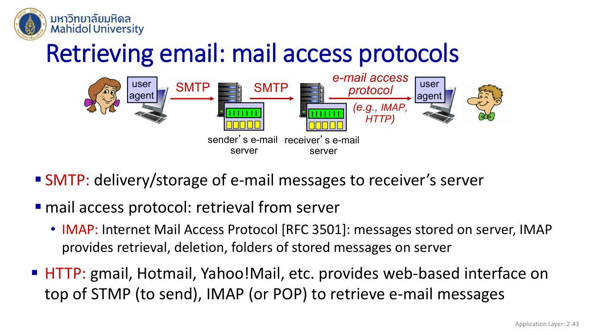
เส้นทางอีเมล (สไลด์ไทย): Sender → (User Agent) → Sender's Mail Server → SMTP (Push) → Receiver's Mail Server (Queue) → IMAP/POP3 (Pull) → Receiver
| SMTP | POP3 | IMAP |
|---|---|---|
| ใช้ ส่ง อีเมล (push protocol) รับเฉพาะข้อความ ASCII 7-bit (ต้องแนบไฟล์ด้วย MIME) | ดาวน์โหลดแล้วลบทิ้ง จากเซิร์ฟเวอร์ | อ่านจากเซิร์ฟเวอร์ ซิงก์โฟลเดอร์ได้หลายอุปกรณ์ |
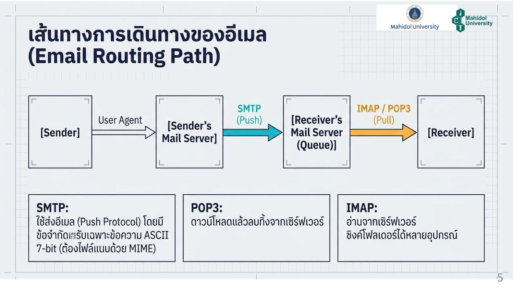
9. DNS: Domain Name System
9.1 DNS คืออะไร
- คนมีหลาย identifier (เลขบัตรประชาชน ชื่อ พาสปอร์ต) — โฮสต์ก็เช่นกัน:
- IP address (32 บิต) — ใช้ระบุที่อยู่ datagram
- "name" เช่น cs.umass.edu — ใช้โดยมนุษย์
- ถาม: จะแปลง IP address ↔ name อย่างไร?
DNS =
- distributed database ที่ implement เป็น ลำดับชั้น (hierarchy) ของ name servers จำนวนมาก
- application-layer protocol: hosts กับ DNS servers คุยกันเพื่อ resolve ชื่อ (แปลง address/name)
- ⚠️ เป็น ฟังก์ชันหลักของอินเทอร์เน็ต แต่ implement เป็น application-layer protocol
- ความซับซ้อนอยู่ที่ "edge" ของเครือข่าย
💡 DNS = สมุดโทรศัพท์ของอินเทอร์เน็ต — แปลง
www.google.com(คนอ่านได้) →142.250.190.46(เครื่องอ่านได้)
- พอร์ต: UDP port 53 (เน้นความเร็ว)
- บริการหลัก: แปลง hostname เป็น IP
- บริการเสริม: host aliasing, mail server aliasing (MX), load distribution
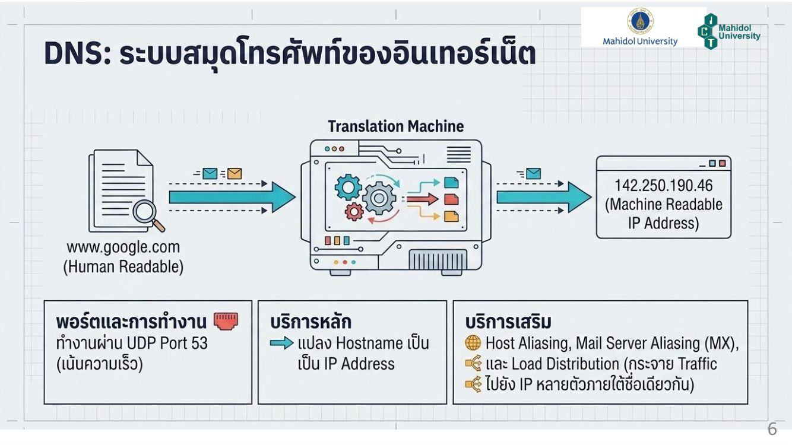
9.2 บริการของ DNS
- hostname → IP address translation
- host aliasing — ชื่อจริง (canonical) กับชื่อเล่น (alias)
- mail server aliasing
- load distribution — replicated web servers: หลาย IP ต่อชื่อเดียว
ทำไมไม่ทำ DNS แบบรวมศูนย์?
- single point of failure (ล่มจุดเดียวพังหมด)
- traffic volume มหาศาล
- distant centralized database (ไกลจากผู้ใช้ส่วนใหญ่)
- maintenance ยาก
ตอบ: มันไม่ scale!
- Comcast DNS servers อย่างเดียว: 600B queries/วัน
- Akamai DNS servers อย่างเดียว: 2.2T queries/วัน
9.3 DNS: distributed, hierarchical database ⭐
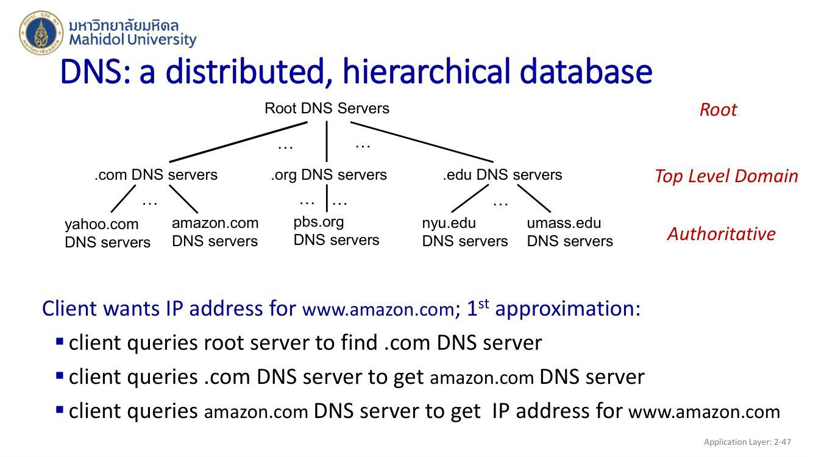
| ระดับ | ตัวอย่าง |
|---|---|
| Root | Root DNS Servers |
| Top Level Domain (TLD) | .com, .org, .edu DNS servers |
| Authoritative | yahoo.com, amazon.com, pbs.org, nyu.edu, umass.edu DNS servers |
ตัวอย่างคร่าว ๆ: client ต้องการ IP ของ www.amazon.com
- ถาม root server → ได้ .com DNS server
- ถาม .com DNS server → ได้ amazon.com DNS server
- ถาม amazon.com DNS server → ได้ IP ของ www.amazon.com
9.4 ประเภทของ DNS server
Root name servers
- ผู้ติดต่อ "ทางเลือกสุดท้าย" (contact-of-last-resort) อย่างเป็นทางการ สำหรับ name server ที่ resolve ชื่อไม่ได้
- สำคัญสุด ๆ — อินเทอร์เน็ตทำงานไม่ได้หากไม่มี!
- DNSSEC — ให้ความปลอดภัย (authentication, message integrity)
- ICANN (Internet Corporation for Assigned Names and Numbers) ดูแล root DNS domain
- 13 logical root name "servers" ทั่วโลก (ชื่อ a.root-servers.net ถึง m.root-servers.net) แต่ละตัว replicate หลายชุด
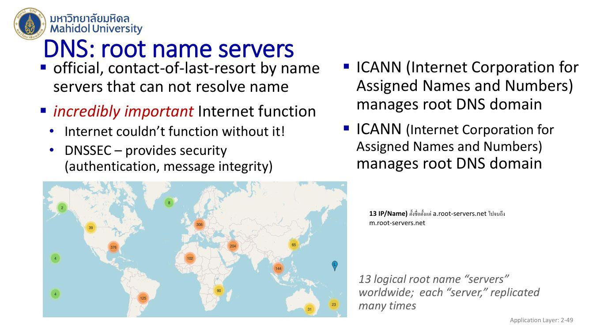
Top-Level Domain (TLD) servers
- ดูแล .com, .org, .net, .edu, .aero, .jobs, .museums และโดเมนประเทศทั้งหมด เช่น .cn, .uk, .fr, .ca, .jp
- Network Solutions: authoritative registry ของ .com, .net
- Educause: .edu
Authoritative DNS servers
- DNS server ขององค์กรเอง ให้ mapping hostname → IP ที่เป็นทางการสำหรับโฮสต์ขององค์กร
- ดูแลโดยองค์กรเองหรือผู้ให้บริการก็ได้
Local DNS name servers
- เมื่อโฮสต์ถาม DNS จะส่งไปที่ local DNS server ก่อน
- local DNS ตอบโดย:
- ดูจาก local cache ของคู่ name-address ล่าสุด (อาจล้าสมัย!)
- หรือ ส่งต่อ request เข้า DNS hierarchy
- ทุก ISP มี local DNS — ดูของตัวเอง: MacOS
% scutil --dns, Windows> ipconfig /all - ⚠️ local DNS ไม่ได้อยู่ในลำดับชั้น อย่างเคร่งครัด
9.5 DNS name resolution: Iterated vs Recursive ⭐
ตัวอย่าง: โฮสต์ที่ engineering.nyu.edu ต้องการ IP ของ gaia.cs.umass.edu
| Iterated query | Recursive query |
|---|---|
| server ที่ถูกถามตอบกลับด้วย ชื่อ server ที่ควรไปถามต่อ | ภาระการ resolve อยู่ที่ server ที่ถูกถาม มันไปถามต่อเองจนได้คำตอบ |
| "ไม่รู้จักชื่อนี้ แต่ลองไปถาม server นี้ดู" | ปัญหา: ภาระหนักที่ระดับบนของ hierarchy? |
| local DNS (dns.nyu.edu) วิ่งไปถาม root → TLD → authoritative เอง | host → local → root → TLD → authoritative แล้วคำตอบย้อนกลับทางเดิม |
| Iterated | Recursive |
|---|---|
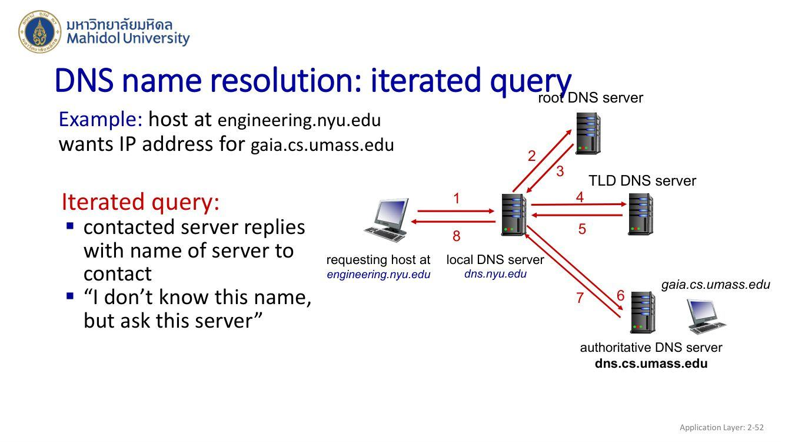 |
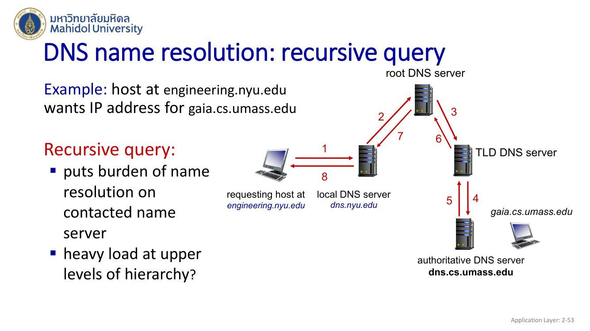 |
ลำดับ iterated (8 ขั้น): 1) host → local DNS (dns.nyu.edu) 2) local → root 3) root ตอบ "ไปถาม TLD" 4) local → TLD 5) TLD ตอบ "ไปถาม authoritative dns.cs.umass.edu" 6) local → authoritative 7) authoritative ตอบ IP 8) local ตอบ host
⚠️ โดยทั่วไป host → local DNS เป็น recursive แต่ local DNS → root/TLD/authoritative เป็น iterated
9.6 Caching DNS information
- เมื่อ name server ใด ๆ เรียนรู้ mapping จะ cache ไว้และตอบจาก cache ทันทีเมื่อมีคนถาม
- caching ช่วย ลด response time
- cache entry หมดอายุ หลังช่วงหนึ่ง (TTL)
- TLD servers มักถูก cache ใน local name servers
- cache อาจ ล้าสมัย
- ถ้าโฮสต์เปลี่ยน IP อาจไม่รู้ทั่วอินเทอร์เน็ตจน TTL ทั้งหมดหมดอายุ
- = best-effort name-to-address translation!
9.7 DNS records (Resource Records, RR) ⭐
RR format: (name, value, type, ttl)
| type | name | value |
|---|---|---|
| A | hostname | IP address |
| NS | domain (เช่น foo.com) | hostname ของ authoritative name server ของโดเมนนี้ |
| CNAME | alias name | canonical (ชื่อจริง) name เช่น www.ibm.com จริง ๆ คือ servereast.backup2.ibm.com |
| MX | domain | ชื่อ SMTP mail server ของ name นั้น |
- เมื่อ query เจอ CNAME ระบบจะนำชื่อจริงไปหา IP ต่ออัตโนมัติ
💡 จำ: A = Address, NS = Name Server, CNAME = Canonical NAME, MX = Mail eXchanger
9.8 DNS protocol messages
query และ reply มีรูปแบบเดียวกัน:
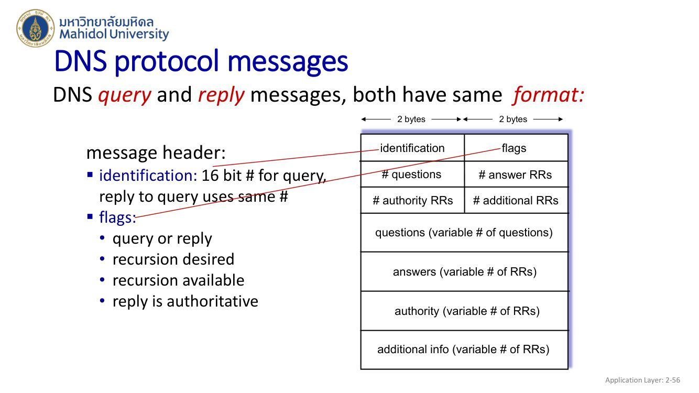
| ฟิลด์ | ขนาด | ความหมาย |
|---|---|---|
| identification | 2 bytes (16 bit) | หมายเลข query; reply ใช้หมายเลขเดียวกัน |
| flags | 2 bytes | query หรือ reply, recursion desired, recursion available, reply is authoritative |
| # questions, # answer RRs, # authority RRs, # additional RRs | 2 bytes ต่อตัว | จำนวนในแต่ละส่วน |
| questions | variable | name, type fields ของ query |
| answers | variable | RRs ตอบ query |
| authority | variable | records ของ authoritative servers |
| additional info | variable | ข้อมูล "ช่วยเหลือ" เพิ่มเติมที่อาจใช้ได้ |
9.9 นำข้อมูลเข้า DNS: ตัวอย่าง startup "Network Utopia"
- จดชื่อ networkutopia.com ที่ DNS registrar (เช่น Network Solutions)
- ให้ชื่อและ IP ของ authoritative name server (primary และ secondary)
- registrar ใส่ NS และ A RRs ลงใน .com TLD server:
(networkutopia.com, dns1.networkutopia.com, NS)(dns1.networkutopia.com, 212.212.212.1, A)
- สร้าง authoritative server เองที่ IP 212.212.212.1
- record type A สำหรับ www.networkutopia.com
- record type MX สำหรับ networkutopia.com
9.10 DNS security
DDoS attacks
- ถล่ม root servers
- ยังไม่เคยสำเร็จ
- มี traffic filtering
- local DNS cache IP ของ TLD servers ไว้ จึง bypass root ได้
- ถล่ม TLD servers — อันตรายกว่า
Spoofing attacks
- ดักจับ DNS query แล้วส่ง คำตอบปลอม กลับ
- DNS cache poisoning (ทำให้ cache เก็บ mapping ปลอม)
- ป้องกัน: RFC 4033: DNSSEC authentication services
10. Video Streaming และ CDNs
10.1 บริบท
- video streaming = ผู้ใช้ bandwidth รายใหญ่ที่สุด — Netflix, YouTube, Amazon Prime = 80% ของ traffic ISP ตามบ้าน (2020)
- ความท้าทาย: scale — จะส่งถึงผู้ใช้ ~1B คนอย่างไร?
- ความท้าทาย: heterogeneity — ผู้ใช้มีความสามารถต่างกัน (มีสาย vs มือถือ, แบนด์วิดท์เยอะ vs น้อย)
- ทางแก้: โครงสร้างพื้นฐานแบบ distributed, application-level
10.2 Multimedia: video
- video = ลำดับของภาพที่แสดงด้วย อัตราคงที่ เช่น 24 ภาพ/วินาที
- digital image = array ของ pixels, แต่ละ pixel แทนด้วย bits
- coding: ใช้ ความซ้ำซ้อน (redundancy) ภายในและระหว่างภาพ เพื่อลดจำนวนบิต
- spatial coding (ภายในภาพ): แทนที่จะส่งค่าสีม่วง N ค่า ส่งแค่ 2 ค่า: สี (ม่วง) + จำนวนครั้งที่ซ้ำ (N)
- temporal coding (ระหว่างภาพ): แทนที่จะส่งเฟรม i+1 ทั้งเฟรม ส่งแค่ ส่วนที่ต่างจากเฟรม i
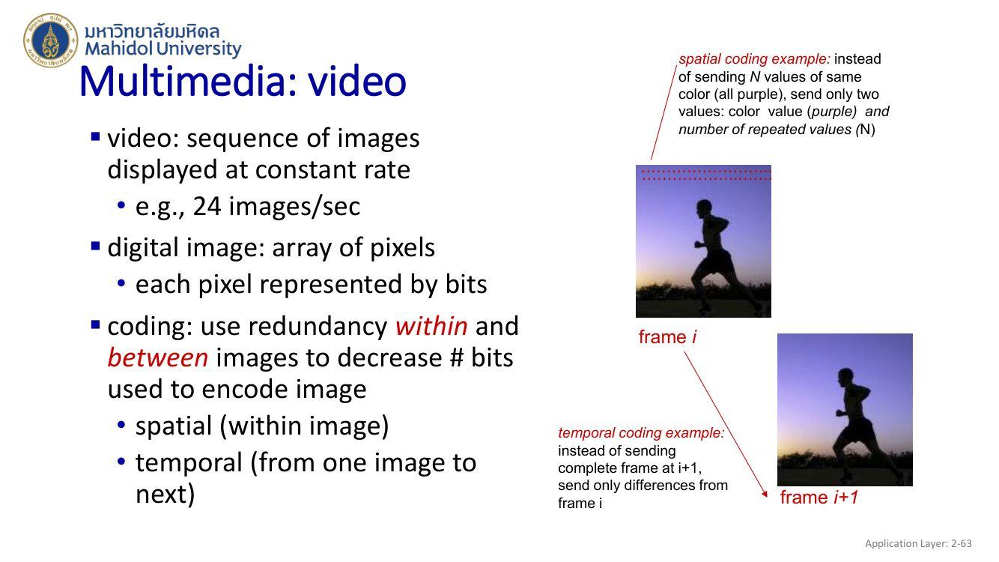
| CBR (constant bit rate) | VBR (variable bit rate) |
|---|---|
| อัตรา encoding คงที่ | อัตรา encoding เปลี่ยน ตามปริมาณ spatial/temporal coding |
ตัวอย่าง: MPEG 1 (CD-ROM) 1.5 Mbps / MPEG2 (DVD) 3–6 Mbps / MPEG4 (ใช้บนอินเทอร์เน็ต) 64 Kbps – 12 Mbps
10.3 Streaming stored video
Simple scenario: video server (stored video) → Internet → client
ความท้าทายหลัก:
- bandwidth จาก server ถึง client เปลี่ยนไปตามเวลา ตามระดับ congestion (ในบ้าน, access network, core, video server)
- packet loss และ delay จาก congestion → เล่นช้า หรือ คุณภาพแย่
ขั้นตอน:
- วิดีโอถูกบันทึก (เช่น 30 frames/sec)
- วิดีโอถูกส่ง (มี network delay)
- client รับและเล่นที่ 30 frames/sec
- streaming: ขณะที่ client เล่นส่วนต้นของวิดีโอ server ยังส่งส่วนหลังอยู่
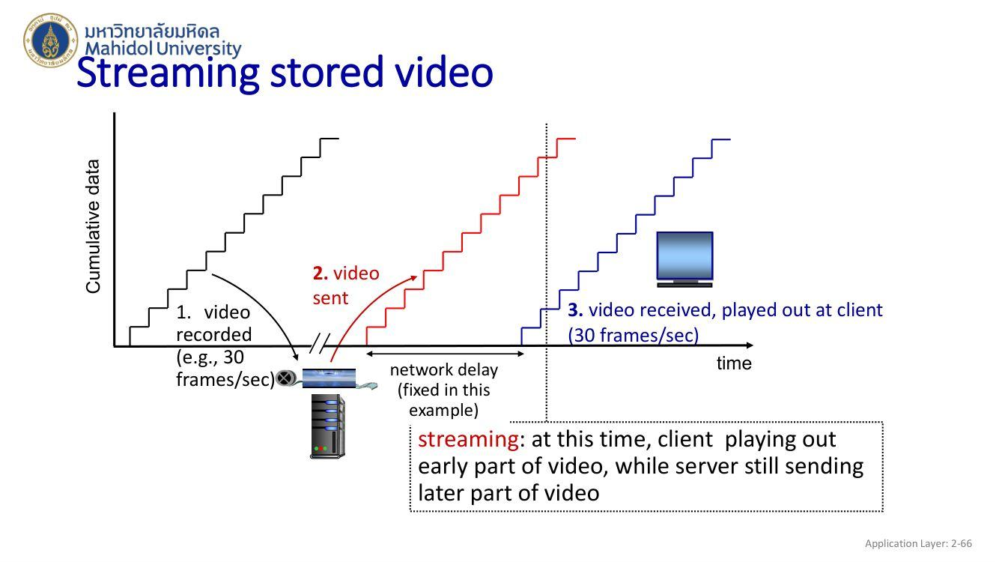
ความท้าทายอื่น:
- continuous playout constraint: ตอนเล่น timing ต้องตรงกับต้นฉบับ แต่ network delay แปรผัน (jitter) → ต้องมี client-side buffer
- client interactivity: pause, fast-forward, rewind, กระโดดไปจุดต่าง ๆ
- video packets อาจ หาย และต้องส่งใหม่
10.4 Playout buffering
- client-side buffering + playout delay ชดเชย network delay และ delay jitter
- ส่งแบบ constant bit rate → ผ่าน network delay ที่แปรผัน → client รับไม่สม่ำเสมอ → เก็บใน buffer → เล่นแบบ constant bit rate หลังรอ playout delay
- ตัวอย่าง: ที่เวลา t0 มาถึงแล้ว 6 chunks, เล่นไปแล้ว 2 chunks → buffer มี 4 chunks
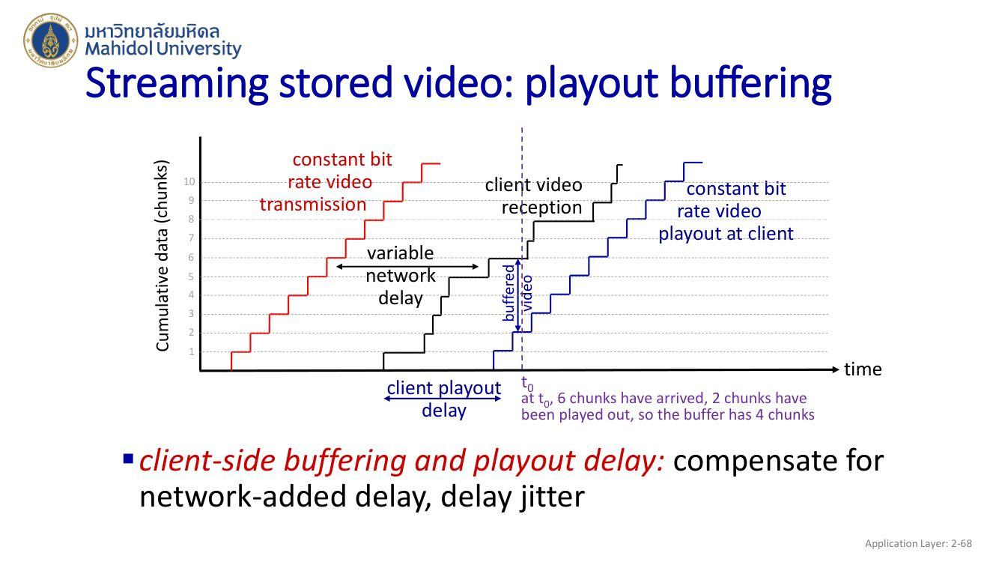
10.5 DASH: Dynamic, Adaptive Streaming over HTTP ⭐
Server:
- แบ่งไฟล์วิดีโอเป็น หลาย chunks
- แต่ละ chunk encode หลายอัตรา (เช่น 360p, 720p, 1080p, 4K)
- แต่ละอัตราเก็บเป็นคนละไฟล์
- ไฟล์ถูก replicate ไปหลาย CDN nodes
- manifest file: ให้ URL ของ chunk ต่าง ๆ
Client:
- ประเมิน bandwidth จาก server ถึง client เป็นระยะ
- อ่าน manifest แล้ว ขอทีละ chunk
- เลือก coding rate สูงสุด ที่ bandwidth ปัจจุบันรองรับได้
- เลือก อัตราต่างกันในแต่ละช่วงเวลา ได้ (ตาม bandwidth ตอนนั้น) และจาก server ต่างกัน ได้
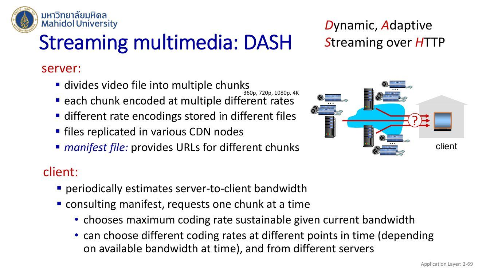
"ความฉลาด" อยู่ที่ client — client ตัดสินใจ:
- เมื่อไหร่ จะขอ chunk (ไม่ให้ buffer หมด (starvation) หรือล้น (overflow))
- encoding rate ไหน (คุณภาพสูงเมื่อ bandwidth มาก)
- ขอจากที่ไหน (server URL ที่ "ใกล้" หรือมี bandwidth มาก)
Streaming video = encoding + DASH + playout buffering
💡 เหมือน YouTube ที่ภาพแตกเป็น 360p ตอนเน็ตช้า แล้วกลับมาชัด 1080p เมื่อเน็ตดีขึ้นเอง — นั่นคือ DASH
10.6 Content Distribution Networks (CDNs) ⭐
ความท้าทาย: จะ stream วิดีโอ (เลือกจากหลายล้านเรื่อง) ให้ผู้ใช้หลายแสนคนพร้อมกันได้อย่างไร?
Option 1: "mega-server" ตัวเดียวขนาดใหญ่
- single point of failure
- จุด congestion ของเครือข่าย
- เส้นทางไปยัง client ที่อยู่ไกล ยาว (และอาจแน่น)
- → ไม่ scale
Option 2: เก็บ/ให้บริการหลายสำเนาของวิดีโอ ที่หลายไซต์กระจายตามภูมิศาสตร์ (CDN)
| Enter deep | Bring home |
|---|---|
| ดัน CDN servers ลึกเข้าไปใน access networks จำนวนมาก | cluster ขนาดใหญ่จำนวนน้อย (หลักสิบ) ใน POPs ใกล้ access nets |
| ใกล้ผู้ใช้ มาก | ไม่ลึกเท่า แต่จัดการง่ายกว่า |
| Akamai: 240,000 servers ใน >120 ประเทศ (2015) | ใช้โดย Limelight |
Akamai today: 360K servers, 100+ million hits/วินาที, 7+ trillion deliveries/วัน, 175+ terabits/วินาที (250+ peak), 4,200+ locations, 1,350+ networks, 840+ cities, 135 countries
10.7 Netflix ทำงานอย่างไร
- Netflix เก็บสำเนาเนื้อหา (เช่น MADMEN) ที่ OpenConnect CDN nodes ทั่วโลก
- ผู้ใช้ขอเนื้อหา → service provider ส่ง manifest file กลับ ("where's Madmen?")
- client ใช้ manifest ดึงเนื้อหาที่ อัตราสูงสุดที่รองรับได้
- อาจเลือก อัตราหรือสำเนาอื่น ถ้าเส้นทางแน่น
10.8 OTT challenges
OTT = "over the top" — ใช้ Internet host-host communication เป็นบริการ (สร้างบริการ "บน" อินเทอร์เน็ตโดยไม่ได้เป็นเจ้าของเครือข่าย) ความท้าทาย: รับมืออินเทอร์เน็ตที่แน่นจาก "edge"
- เนื้อหาไหน ควรวางที่ CDN node ไหน?
- ดึงเนื้อหาจาก CDN node ไหน? ที่ อัตราเท่าไหร่?
11. Socket Programming
เป้าหมาย: เรียนวิธีสร้างแอป client/server ที่สื่อสารด้วย sockets socket = ประตูระหว่าง application process กับ end-end transport protocol (ฝั่ง app ควบคุมโดย developer, ฝั่งล่างควบคุมโดย OS)
Socket 2 ชนิด สำหรับ transport service 2 แบบ:
- UDP: unreliable datagram
- TCP: reliable, byte stream-oriented
ตัวอย่างแอป (ใช้ทั้ง UDP และ TCP):
- client อ่านบรรทัดตัวอักษรจากคีย์บอร์ด แล้วส่งไป server
- server รับข้อมูล แปลงตัวอักษรเป็น ตัวพิมพ์ใหญ่ (uppercase)
- server ส่งข้อมูลที่แก้แล้วกลับให้ client
- client รับแล้วแสดงบนหน้าจอ
Socket programming with UDP
UDP: ไม่มี "connection" ระหว่าง client กับ server
- ไม่มี handshaking ก่อนส่งข้อมูล
- ผู้ส่ง แนบ IP ปลายทางและ port # ไปกับ ทุกแพ็กเก็ต เอง
- ผู้รับ ดึง IP และ port# ของผู้ส่ง ออกจากแพ็กเก็ตที่ได้รับ
UDP: ข้อมูลที่ส่งอาจหาย หรือมาถึงไม่เรียงลำดับ
มุมมองของแอป: UDP ให้การส่ง "กลุ่มของไบต์" (datagrams) แบบ unreliable ระหว่าง client กับ server process
12. คำศัพท์สำคัญ
| คำศัพท์ | ความหมาย | จำง่าย ๆ ว่า |
|---|---|---|
| Client-server | server เปิดตลอด IP ถาวร, client ไม่คุยกันเอง | ร้านอาหารกับลูกค้า |
| P2P | peer คุยกันตรง, self-scalability | แลกของกันเองในกลุ่ม |
| Self scalability | peer ใหม่เพิ่มทั้งความต้องการและความสามารถ | ยิ่งคนเยอะยิ่งเร็ว |
| Process | โปรแกรมที่กำลังรันในโฮสต์ | |
| Client / Server process | ฝ่ายเริ่ม / ฝ่ายรอ | |
| IPC | การสื่อสารระหว่าง process ในเครื่องเดียว (OS กำหนด) | |
| Socket | ประตูระหว่าง process กับ transport | ประตูบ้าน |
| Port number | ระบุ process ในเครื่อง | เลขห้อง |
| PID | Process ID ที่ OS กำหนดในเครื่อง | |
| TLS | เข้ารหัส TCP + integrity + authentication (implement ที่ app layer) | ท่อเข้ารหัส |
| Object / Base HTML | ชิ้นส่วนของหน้าเว็บ / ไฟล์หลักที่อ้าง object อื่น | |
| URL | host name + path name | |
| HTTP | HyperText Transfer Protocol, TCP port 80 | |
| Stateless | server ไม่จำ request เก่า | ปลาทอง |
| RTT | เวลาไป-กลับของแพ็กเก็ตเล็ก | |
| Non-persistent / Persistent HTTP | 1 object ต่อ connection / หลาย object ต่อ connection | 2RTT ต่อ object / ~1RTT รวม |
| GET / POST / HEAD / PUT | ขอ / ส่งฟอร์มใน body / ขอเฉพาะ header / อัปโหลดแทนที่ | |
| Status code | 200, 301, 304, 400, 404, 505 | |
| Cookie | ID ที่ใช้เก็บ state (Set-Cookie, Cookie header) | บัตรสมาชิก |
| First / Third-party cookie | จากเว็บที่เลือกเข้า / จากเว็บที่ไม่ได้เลือก (โฆษณา) | |
| GDPR | กฎหมายคุ้มครองข้อมูล EU, cookie ระบุตัวได้ = ข้อมูลส่วนบุคคล | |
| Web cache / Proxy | ตอบแทน origin server, เป็นทั้ง client และ server | |
| Forward / Reverse proxy | ฝั่ง client / ฝั่ง server | |
| Cache-Control: max-age | ระยะเวลาที่แคชได้ | |
| Conditional GET | If-modified-since → 304 Not Modified | |
| HOL blocking | object เล็กต้องรอ object ใหญ่ข้างหน้า | คิวหลังรถบรรทุก |
| HTTP/2 | frames + priority + push, บน TCP | |
| HTTP/3 / QUIC | บน UDP, handshake 1-RTT / 0-RTT | |
| User agent | โปรแกรมอ่านเขียนอีเมล | |
| SMTP | ส่งอีเมล TCP port 25, push, ASCII 7-bit | |
| IMAP / POP3 | ดึงอีเมล: เก็บบน server ซิงก์ได้ / โหลดแล้วลบ | pull |
| MIME | วิธีแนบไฟล์ในอีเมล | |
| DNS | distributed hierarchical database แปลงชื่อ ↔ IP, UDP 53 | สมุดโทรศัพท์ |
| Root / TLD / Authoritative / Local DNS | ระดับของ DNS server | |
| ICANN | ดูแล root DNS domain | |
| Iterated / Recursive query | ตอบว่า "ไปถามคนนี้" / ไปถามต่อให้เอง | |
| TTL | อายุของ cache entry | |
| RR (A, NS, CNAME, MX) | (name, value, type, ttl) | |
| DNSSEC | ความปลอดภัย DNS (RFC 4033) | |
| DNS cache poisoning | ใส่ mapping ปลอมลง cache | |
| CBR / VBR | bit rate คงที่ / แปรผัน | |
| Spatial / Temporal coding | บีบอัดภายในภาพ / ระหว่างภาพ | |
| Jitter | delay ที่แปรผัน | |
| Playout buffer | buffer ฝั่ง client ชดเชย jitter | |
| DASH | แบ่ง chunk หลาย bitrate, client เลือกเอง | YouTube ปรับความชัด |
| Manifest file | ไฟล์บอก URL ของ chunk แต่ละอัตรา | |
| CDN | กระจายสำเนาเนื้อหาไปหลายไซต์ | |
| Enter deep / Bring home | CDN ลึกใน access net (Akamai) / cluster ใหญ่ใน POP (Limelight) | |
| OTT | Over the top | |
| UDP socket | ไม่มี connection แนบ IP+port ทุกแพ็กเก็ต | |
| TCP socket | reliable, byte stream |
13. สรุปท้ายบท / จุดที่มักออกสอบ
- Client-server vs P2P — server always-on, IP ถาวร, data center; P2P ไม่มี server, self-scalability, จัดการยาก (dynamic IP); P2P ก็มี client/server process
- Process ระบุด้วย IP + port (IP อย่างเดียวไม่พอ เพราะเครื่องเดียวมีหลาย process) — ในเครื่องใช้ PID
- Socket = ประตู; app developer คุมฝั่ง app, OS คุมฝั่ง transport ลงไป
- TCP: reliable, flow control, congestion control, connection-oriented / UDP: ไม่มีอะไรเลย แต่เร็ว; ทั้งคู่ไม่ให้ timing, throughput guarantee, security
- TLS implement ที่ application layer ให้ encryption + integrity + authentication
- Web page = base HTML + objects ที่อ้างด้วย URL (host name + path name)
- HTTP ใช้ TCP port 80 และ stateless
- Non-persistent = 2RTT + transmission time ต่อ object; persistent (HTTP/1.1) ≈ 1 RTT สำหรับทุก object ที่อ้างถึง
- HTTP request: request line (method URL version) + header lines +
\r\n+ body; response: status line + headers + data - Methods: GET (ข้อมูลใน URL หลัง ?), POST (ใน entity body), HEAD (header อย่างเดียว), PUT (อัปโหลดแทนที่)
- Status codes: 200, 301, 304, 400, 404, 505
- Cookies 4 องค์ประกอบ: Set-Cookie header ใน response, cookie file ฝั่ง client, Cookie header ใน request, backend database
- First-party vs third-party cookies, ตัวอย่าง AdX ตามรอยข้ามเว็บ; Firefox (ETP) และ Safari (ITP) บล็อก third-party เป็นค่าเริ่มต้น; GDPR: cookie ที่ระบุตัวได้ = ข้อมูลส่วนบุคคล
- Web cache เป็นทั้ง client และ server; ลด response time, ลด traffic บน access link
- ตัวอย่างคำนวณ caching: utilization 1.50/1.54 = 0.97 → ลิงก์ 154 Mbps: 0.0097 (แพง) → cache hit 40%: intensity 0.58, delay = 0.6 × 2.065 ≈ 1.24 s (ถูกกว่าและดีกว่า)
- Conditional GET:
If-modified-since→304 Not Modified(ไม่ส่ง object) หรือ200 OK+ data - HOL blocking ใน HTTP/1.1 (FCFS) → HTTP/2 แบ่ง frames, client-specified priority, server push → แต่ยังติด TCP retransmission → HTTP/3 = QUIC over UDP
- QUIC: 1 handshake (1-RTT) แทน TCP + TLS 2 handshakes; 0-RTT ด้วย TLS session ticket
- Ports: 20/21 FTP, 22 SSH, 23 Telnet, 25 SMTP, 53 DNS, 80 HTTP, 110 POP3, 143 IMAP, 443 HTTPS/QUIC, 465/587 SMTPS, 993 IMAPS, 995 POP3S, 3306 MySQL, 5432 PostgreSQL, 6379 Redis, 8080/8443 HTTP-Alt
- E-mail: user agent, mail server (mailbox + message queue), SMTP (TCP port 25, 3 phases: handshaking, transfer, closure, ASCII) — SMTP = push, IMAP/POP3 = pull; RFC 5321 = SMTP, RFC 2822 = message format; header
From:≠ คำสั่งMAIL FROM: - Alice → Bob 6 ขั้นตอน
- DNS: distributed hierarchical database; ฟังก์ชันหลักของอินเทอร์เน็ตแต่เป็น application-layer protocol; ไม่ centralize เพราะ single point of failure, traffic volume, distant database, maintenance
- DNS services: hostname→IP, host aliasing, mail server aliasing, load distribution
- ลำดับชั้น: Root (13 logical, ICANN) → TLD (.com, .edu; Network Solutions, Educause) → Authoritative; Local DNS ไม่อยู่ใน hierarchy
- Iterated vs Recursive query (recursive = ภาระอยู่ที่ server ที่ถูกถาม, โหลดหนักที่ระดับบน)
- DNS caching + TTL → best-effort, อาจล้าสมัย
- RR types: A (host→IP), NS (domain→name server), CNAME (alias→canonical), MX (domain→mail server); format (name, value, type, ttl)
- DNS message: query/reply format เดียวกัน, identification 16 bit, flags
- DNS security: DDoS root (ยังไม่สำเร็จ, bypass ด้วย cache TLD), DDoS TLD (อันตรายกว่า), spoofing/cache poisoning → DNSSEC
- Video: spatial vs temporal coding, CBR vs VBR, MPEG1 1.5 Mbps / MPEG2 3–6 Mbps / MPEG4 64 Kbps–12 Mbps
- Streaming = encoding + DASH + playout buffering; jitter → client buffer
- DASH: server แบ่ง chunk หลาย rate + manifest; client ฉลาด เลือก when / what rate / where
- CDN: mega-server ไม่ scale → enter deep (Akamai) vs bring home (Limelight); Netflix ใช้ OpenConnect; OTT challenges
- Socket: UDP = unreliable datagram, ไม่มี handshake, แนบ IP+port ทุกแพ็กเก็ต, อาจหาย/สลับลำดับ; TCP = reliable byte stream